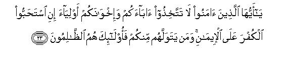
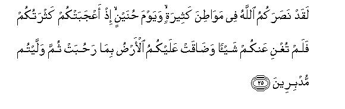
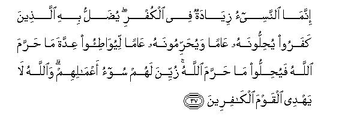
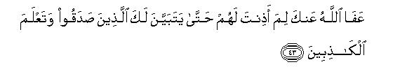
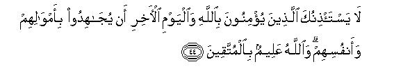
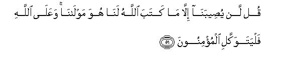
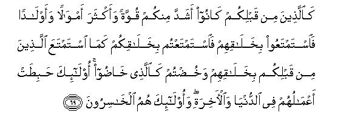
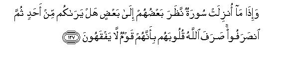

بسم الله الرحمن الرحيم
Sayyid Abul Ala Maududi - Tafhim al-Qur'an - The Meaning of the Qur'an
 9.
Surah At Taubah (The Repentance)
9.
Surah At Taubah (The Repentance)
This Surah is known by two names -- At-Taubah and Al-Bara'at. It is called At-Taubah because it enunciates the nature of taubah (repentance) and mentions the conditions of its acceptance.(vv. 102. 118). The second name Bara'at (Release) is taken from the first word of the Surah.
This is the only Surah of the Quran to which Bismillah is not prefixed. Though the commentators have given different reasons for this, the correct one that which has been given by Imam Razi: namely,this is because the Holy Prophet himself did not dictate it at the beginning of the Surah. Therefore the Companions did not prefix it and their successors followed them., This is a further proof of the fact that utmost care has been taken to keep the Quran intact so that it should remain in its complete and original form.
This Surah comprises three discourses:-
The first discourse (vv. 1-37), was revealed in Zil-Qa'adah A.H. 9 or thereabout. As the importance of the subject of the discourse required its declaration on the occasion of Haj the Holy Prophet dispatched Hadrat Ali to follow Hadrat Abu Bakr, who had already left for Makkah as leader of the Pilgrims to the Ka'abah. He instructed Hadrat Ali to deliver the discourse before the representatives of the different clans of Arabia so as to inform them of the new policy towards the mushriks.
The second discourse (vv., 38-72) was sent down in Rajab A.H. 9 or a little before this, when the Holy Prophet was engaged in making preparations for the Campaign, of Tabuk. In this discourse, the Believers were urged to take active part in Jihad, and the shirkers were severely rebuked for holding back their wealth and for hesitation to sacrifice their lives in the way of Allah because of their hypocrisy, weak faith or negligence.
The third discourse (vv. 73-129) was revealed on his return from the Campaign of Tabuk. There are some pieces in this discourse that were sent down on different occasions during the same period and were afterwards consolidated by the Holy Prophet into the Surah in accordance with inspiration from Allah. But this caused no interruption in its continuity because they dealt with the same subject and formed part of the same series of events. This discourse warns the hypocrites of their evil deeds and rebukes those Believers who had stayed behind in the Campaign of Tabuk. Then after taking them to task, Allah pardons those true Believers who had not taken part in the Jihad in the Way of Allah for one reason or the other.
Chronologically, the first discourse should have come last; but being the most important of the three in regard to its subject matter, it was placed first in the order of compilation.
Now let us consider the historical background of the Surah. The series of events that have been discussed in this Surah took place after the Peace Treaty of Hudaibiyah. By that time, one-third of Arabia had come under the sway of Islam which had established itself as a powerful, well organized and civilized Islamic State. This Treaty afforded further opportunities to Islam to spread its influence in the comparatively peaceful atmosphere created by it. After this Treaty, two events took place, which led to very important results:
The first was the Conquest of Arabia. The Holy Prophet was able to send missions among different clans for the propagation of Islam. The result was that during the short period of two years, it became such a great power that it made the old order of ignorance' feel helpless before it. So much so that the zealous elements from among the Quraish were so exasperated that they broke the Treaty in order to encounter Islam in a decisive combat. But the Holy Prophet took prompt action after the breach so as not to allow them any opportunity to gather enough force for this. He made a sudden invasion on Makkah in the month of Ramadan in A. H. 8 and conquered it. Though this conquest broke the backbone of the order of ignorance, it made still another attack on Islam in the battle-field of Hunain, which proved to be its death-knell. The clans of Hawazin Thaqif, Naur, Jushm and others gathered their entire forces in the battle field in order to crush the reformative Revolution, but they utterly failed in their evil designs. The defeat of 'ignorance' at Hunain paved the way for making the whole of Arabia the 'Abode of Islam' (Dar-ul-Islam). The result was that hardly a year had Passed after the Battle of Hunain, when the major portion of Arabia came within the fold of Islam and only a few upholders of the old order remained scattered over some corners of the country.
The second event that contributed towards making Islam a formidable power was the Campaign of Tabuk, which was necessitated by the provocative activities of the Christians living within or near the boundaries of the Roman Empire to the north of Arabia. Accordingly, the Holy Prophet, with an army of thirty thousand marched boldly towards the Roman Empire but the Romans evaded the encounter. The result was that the power of the Holy Prophet and Islam increased manifold and deputations from all corners of Arabia began to wait upon him on his return from Tabuk in order to offer their allegiance to Islam and obedience to him. The Holy Quran has described this triumph in Surah An-Nasr: "When the succor of Allah came and victory was attained and you saw people entering the fold of Islam in large numbers...
The Campaign to Tabuk was the result of conflict with the Roman Empire, that had started even before the conquest of Makkah. One of the missions sent after the Treaty of Hudaibiyah to different parts of Arabia visited the clans which lived in the northern areas adjacent to Syria. The majority of these people were Christians, who were under the influence of the Roman Empire. Contrary to all the principles of the commonly accepted international law, they killed fifteen members of the delegation near a place known as Zat-u-Talah (or Zat-i-Itlah). Only Ka'ab bin Umair Ghifari, the head of the delegation, succeeded in escaping and reporting the sad incident. Besides this, Shurahbll bin Amr, the Christian governor of Busra, who was directly under the Roman Caesar, had also put to death Haritli bin Umair, the ambassador of the Holy Prophet, who had been sent to him on a similar minion.
These events convinced the Holy Prophet that a strong action should be taken in order to make the territory adjacent to the Roman Empire safe and secure for the Muslims. Accordingly, in the month of Jamadi-ul-Ula A. H. 8, he sent an army of three thousand towards the Syrian border. When this army reached near Ma'an, the Muslims learned that Shurahbil was marching with an army of one hundred thousand to fight-with them and that the Caesar, who himself was at Hims, had sent another army consisting of one hundred thousand soldiers under his brother Theodore. But in spite of such fearful news, the brave small band of the Muslims marched on fearlessly and encountered the big army of Shurahbil at M'utah. And the result of the encounter in which the Muslims were fighting against fearful odds (the ratio of the two armies was 1:33), as very favorable, for the enemy utterly failed to defeat them. This proved very helpful for the propagation of Islam. As a result, those Arabs who were living in a state of semi independence in Syria and near Syria and the clans of Najd near Iraq, who were under the influence of the Iranian Empire, turned towards Islam and embraced it in thousands. For example, the people of Bani Sulaim (whose chief was Abbas bin Mirdas Sulaimi), Ashja'a, Ghatafan, Zubyan, Fazarah, etc., came into the fold of Islam at the same time. Above all, Farvah bin 'Amral Juzami, who was the commander of the Arab armies of the Roman Empire, embraced Islam during that time, and underwent the trial of his Faith in a way that filled the whole territory with wonder. When the Caesar came to know that Farvah had embraced Islam, he ordered that he should be arrested and brought to his court. Then the Caesar said to him, "You will have to choose one of the two things. Either give up your Islam and win your liberty and your former rank, or remain a Muslim and face death." He calmly chose Islam and sacrificed his life in the way of the Truth.
No wonder that such events as these made the Caesar realize the nature of the danger that was threatening his Empire from Arabia. Accordingly, in 9 A.H. he began to make military preparations to avenge the insult he had suffered at M'utah. The Ghassanid and other Arab chiefs also began to muster armies under him. When the Holy Prophet, who always kept himself well-informed even of the minutest things that could affect the Islamic Movement favorably or adversely, came to know of these preparations, he at once under- stood their meaning. Therefore, without the least hesitation he decided to fight against the great power of the Caesar. He knew that the show of the slightest weakness would result in the utter failure of the Movement which was facing three great dangers at that time. First the dying power of 'ignorance' that had almost been crushed in the battle-field of Hunain might revive again. Secondly, the Hypocrites of Al: Madinah, who were always on the look-out for such an opportunity, might make full use of this to do the greatest possible harm to it. For they had already made preparations for this and had, through a monk called Abu Amir, sent secret messages of their evil designs to the Christian king of Ghassan and the Caesar himself. Besides this, they had also built a mosque near Al-Madinah for holding secret meetings for this purpose. The third danger was of an attack by the Caesar himself, who had already defeated Iran, the other great power of that period, and filled with awe the adjacent territories.
It is obvious that if all these three elements had been given an opportunity of taking a concerted action against the Muslims, Islam would have lost the fight it had almost won. That is why in this case the Holy Prophet made an open declaration for making preparations for the Campaign against the Roman Empire, which was one of the two greatest empires of the world of that period. The declaration was made though all the apparent circumstances were against such a decision: for there was famine in the country and the long awaited crops were about to ripen: the burning heat of the scorching summer season of Arabia was at, its height and there was not enough money for preparations in general, and for equipment and conveyance in particular. But in spite of these handicaps, when the Messenger of Allah realized the urgency of the occasion, he took this step which was to decide whether the Mission of the Truth was going to survive or perish. The very fact that he made an open declaration for making preparations for such a campaign to Syria against the Roman Empire showed how important it was, for this was contrary to his previous practice. Usually he took every precaution not to reveal beforehand the direction to which he was going nor the name of the enemy whom he was going to attack; nay, he did not move out of Al-Madinah even in the direction of the campaign.
All the parties in Arabia fully realized the grave consequences of this critical decision. The remnants of the lovers of the old order of 'ignorance' were anxiously waiting for the result of the Campaign, for they had pinned all their hopes on the defeat of Islam by the Romans. The 'hypocrites' also considered it to be their last chance of crushing the power of Islam by internal rebellion, if the Muslims suffered a defeat in Syria. They had, therefore, made full use of the Mosque built by them for hatching plots and had employed all their devices to render the Campaign a failure. On the other side, the true Believers also realized fully that the fate of the Movement for which they had been exerting their utmost for the last 22 years was now hanging in the balance. If they showed courage on that critical occasion, the doors of the whole outer world would be thrown open for the Movement to spread. But if they showed weakness or cowardice, then all the work they had done in Arabia would -end in smoke.
That is why these lovers of Islam began to make enthusiastic preparations for the Campaign. Everyone of them tried to surpass the other in making contributions for the provision of equipment for it. Hadrat Uthman and Hadrat Abdur Rehman bin Auf presented large sums of money for this purpose. Hadrat Umar contributed half of the earnings of his life and Hadrat Abu Bakr the entire earnings of his life. The indigent Companions did not lag behind and presented whatever they could earn by the sweat of their labor and the women parted with their ornaments. Thousands of volunteers, who were filled with the desire of sacrificing their lives for Islam, came to the Holy Prophet and requested that arrangements for weapons and conveyance be made for them so that they should join the expedition. Those who could not be provided with these shed tears of sorrow; the scene was so pathetic that it made the Holy Prophet sad because of his inability to arm them. In short, the occasion became the touchstone for discriminating a true believer from a hypocrite. For, to lag behind in the Campaign meant that the very relationship of a person to Islam was doubtful. Accordingly, whenever a person lagged behind during the journey to Tabuk, the Holy Prophet, on being informed, would spontaneously say, "Leave him alone. If there be any good in him, Allah will again join him with you, and if there be no good in him, then thank Allah that He relieved you of his evil company".
In short, the Holy Prophet marched out towards Syria in Rajab A. H. 9, with thirty thousand fighters for the cause of Islam. The conditions in which the expedition was undertaken may be judged from the fact that the number of camels with them was so small that many of them were obliged to walk on foot and to wait for their turns for several had to ride at a time on each camel. To add to this, there was the burning heat of the desert and the acute shortage of water. But they were richly rewarded for their firm resolve and sincere adherence to the cause and for their perseverance in the face of those great difficulties and obstacles.
When they arrived at Tabuk, they learned that the Caesar and his allies had withdrawn their troops from the frontier and there was no enemy to fight with. Thus they won a moral victory that increased their prestige manifold and, that too, without shedding a drop of blood.
In this connection, it is pertinent to point out that the general impression given by the historians of the campaigns of the Holy Prophet about the Campaign of Tabuk is not correct. They relate the event in a way as if the news of the mustering of the Roman armies near the Arabian frontier was itself false. The fact is that the Caesar had begun to muster his armies, but the Holy Prophet forestalled him and arrived on the scene before he could make full preparations for the invasion. Therefore, believing that "discretion is the better part of valor," he withdrew his armies from the frontier. For he had not forgotten that the three thousand fighters for the cause of Islam had rendered helpless his army one hundred thousand strong at M'utah. He could not, therefore, even with an army of two hundred thousand, dare to fight against an army of thirty thousand, and that, too, under the leadership of the Holy Prophet himself.
When the Holy Prophet found that the Caesar had withdrawn his forces from the frontier, he considered thee question whether it would be worthwhile to march into the Syrian territory or to halt at Tabuk and turn his moral victory to political and strategical advantage. He decided on the latter course and made a halt for twenty days at Tabuk. During this time, he brought pressure on the small states that lay between the Roman Empire and the Islamic State and were at that time under the influence of the Romans, and subdued and made them the tributaries of the Islamic State. For instance, some Christian chiefs Ukaidir bin Abdul Malik Kindi of Dumatul Jaiidal, Yuhanna bin D'obah of Allah, and the chiefs of Maqna, Jarba' and Azruh also submitted and agreed to pay Jizyah to the Islamic State of Al- Madinah. As a result of this, the boundaries of the Islamic State were extended right up to the Roman Empire, and the majority of the Arab clans, who were being used by the Caesar against Arabia, became the allies of the Muslims against the Romans.
Above all, this moral victory of Tabuk afforded a golden opportunity to the Muslims to strengthen their hold on Arabia before entering into a long conflict with the Romans. For it broke the back of those who had still been expecting that the old order of 'ignorance' might revive in the near future, whether they were the open upholders of shirk or the hypocrites who were hiding their shirk under the garb of Islam. The majority of such people were compelled by the force of circumstances to enter into the fold of Islam and, at least, make it possible for their descendants to become true Muslims. After this a mere impotent minority of the upholders of the old order was left in the field, but it could not stand in the way of the Islamic Revolution for the perfection of which Allah had sent His Messenger.
If we keep in view the preceding background, we can easily find out the problems that were confronting the Community at that time. They were:
to make the whole of Arabia a perfect Dar-ul-Islam,
to extend the influence of Islam to the adjoining countries,
to crush the mischiefs of the hypocrites, and
to prepare the Muslims for Jihad against the non- Muslim world.
Now that the administration of the whole of Arabia had come in the hands of the Believers, and all the opposing powers had become helpless, it was necessary to make a clear declaration of that policy which was to be adopted to make her a perfect Dar-ul-Islam. Therefore the following measures were adopted:
A clear declaration was made that all the treaties with the mushriks were abolished and the Muslims would be released from the treaty obligations with them after a respite of four months.(vv. 1-3). This declaration was necessary for uprooting completely the system of life based on shirk and to make Arabia exclusively the center of Islam so that it should not in any way interfere with the spirit of Islam nor become an internal danger for it.
A decree was issued that the guardianship of the Ka`abah, which held central position in all the affairs of Arabia, should be wrested from the mushriks and placed permanently in the hands of the Believers, (vv. 12-18) that all the customs and practices of the shirk of the era of 'ignorance' should be forcibly abolished: that the mushriks should not be allowed even to come near the "House" (v. 28). This was to eradicate every trace of shirk from the "House" that was dedicated exclusively to the worship of Allah.
The evil practice of Nasi, by which they used to tamper with the sacred months in the days of 'ignorance', was forbidden as an act of kufr(v. 37). This was also to serve as an example to the Muslims for eradicating every vestige of the customs of ignorance from the life of Arabia (and afterwards from the lives of the Muslims everywhere).
In order to enable the Muslims to extend the influence of Islam outside Arabia, they were enjoined to crush with sword the non- Muslim powers and to force them to accept the sovereignty of the Islamic State. As the great Roman and Iranian Empires were the biggest hindrances in the way, a conflict with them was inevitable. The object of Jihad was not to coerce them to accept Islam they were free to accept or not to accept it-but to prevent them from thrusting forcibly their deviations upon others and the coming generations. The Muslims were enjoined to tolerate their misguidance only to the extent that they might have the freedom to remain misguided, if they chose to be so, provided that they paid Jizyah (v. 29) as a sign of their subjugation to the Islamic State.
The third important problem was to crush the mischiefs of the hypocrites, who had hitherto been tolerated in spite of their flagrant crimes. Now that there was practically no pressure upon them from outside, the Muslims were enjoined to treat them openly as disbelievers (v. 73). Accordingly, the Holy Prophet set on fire the house of Swailim, where the hypocrites used to gather for consultations in order to dissuade the people from joining the expedition to Tabuk. Likewise on his return from Tabuk, he ordered to pull down and burn the 'Mosque' that had been built to serve as a cover for the hypocrites for hatching plots against the true Believers.
In order to prepare the Muslims for Jihad against the whole non-Muslim world, it was necessary to cure them even of that slight weakness of faith from which they were still suffering. For there could be no greater internal danger to the Islamic Community than the weakness of faith, especially where it was going to engage itself single-handed in a' conflict with the whole non-Muslim world. That is why those people who had lagged behind in the Campaign to Tabuk or had shown the least negligence were severely taken to task, and were considered as hypocrites if they had no plausible excuse for not fulfilling that obligation. Moreover, a clear declaration was made that in future the sole criterion of a Muslim's faith shall be the exertions he makes for the uplift of the Word of Allah and the role he plays in the conflict between Islam and kufr. Therefore, if anyone will show any hesitation in sacrificing his life, money, time and energies, his faith shall not be regarded as genuine. (vv. 81-96).
If the above-mentioned important points are kept in view during the study of this Surah, it will facilitate the understanding of its contents.
In continuation of Surah Al-Anfal, this Surah also deals with the problems of peace and war and bases the theme on the Tabuk Expedition.
This portion deals with the sanctity of treaties and lays down principles, rules and regulations which must be kept in view before breaking them, in case the other party does not observe them sincerely. 1 - 12
In this portion the Muslims have been urged to fight in the Way of Allah with the mushrik Arabs, the Jews and the Christians, who were duly warned of the consequences of their mischievous and inimical behavior. 13 - 37
In this discourse, the Muslims have been told clearly and explicitly that they will inherit the rewards promised by Allah only if they take active part in the conflict with kufr, for that is the criterion which distinguishes true Muslims from hypocrites. Therefore true Muslims should take active part in Jihad, without minding dangers, obstacles, difficulties, temptations and the like. 38 - 72
This portion deals with the problems of hypocrites and lays down rules and regulations governing the treatment that should be meted out to them and points out their distinctive marks from true Muslims. 73 - 90
This portion deals with the case of those who remained behind and did not accompany the Holy Prophet for Jihad to Tabuk. For this purpose they have been separated in different categories, that is, the disabled, the sick, the indigent, the hypocrites, the believers who realized their guilt and punished themselves before the return of the Holy Prophet from Tabuk and those who confessed their error. Their cases have been dealt with in accordance with the nature and extent of their offense. 91 - 110
In order to make their noble qualities look all the more conspicuous and dignified by contrast, the characteristics of the Believers have been mentioned, and they have been reassured that Allah, the Sovereign of the Universe, is their helper and guardian. Accordingly, because of their sincerity, He has forgiven the Three Believers who did not take part in the expedition. 111 - 118
In the concluding portion, general instructions have been given to the Believers for their guidance. 119 - 127
This is the conclusion: "Follow the Messenger who is gentle and compassionate and your greatest well-wisher, and trust in Allah, the Lord of the Universe". 128 - 129
[1-2] This is a declaration1 of immunity (from obligations) by Allah and His Messenger to those mushriks with whom you had made treaties:2 "You are free to move about in the land for four months more:3 but you should know that you cannot frustrate the Will of Allah, and that Allah will degrade the rejecters of the Truth."
[3-4] This is a public proclamation from Allah and His Messenger for all the people on the Day of Great Haj:4 Allah is free from the treaty obligations made with the mushriks and so is His Messenger. If, therefore, you repent now, it is better for you but if you turn away, you should know it well that you cannot frustrate (the Will of) Allah. And, O Prophet, give the good news of a painful chastisement to the rejecters excepting those mushriks with whom you made treaties. and who afterwards did not violate these in the least nor did they give help to anyone against you; so you also should observe the treaties with such people in accordance with their terms, for Allah loves the pious people.5
[5-6] Then, when the months made unlawful6 for fighting expire, kill the mushriks wherever you find them, and seize them, and besiege them, and lie in wait for them at every place of ambush. But if they repent, and establish Salat and pay the Zakat dues, then let them go their way:7 for Allah is Forgiving and Compassionate. And if any of the mushriks requests you for protection so that he may come to you (to hear the Word of Allah), give him protection till he hears the Word of Allah; then convey him. to the place of his safety: this should be done because these people do not know the Truth.8
[7-8] How shall a treaty with these mushriks be regarded as abiding by Allah and His Messenger? -excepting those with whom you made a treaty at the Masjid-i-Haram:9 so long as they behave rightly with you, you also should behave rightly with them, for Allah loves the righteous people.-But how can a treaty be regarded as abiding with the other mushriks? Since if they get power over you, they will not respect ties of kindred with you nor honor any treaty obligations. They try to conciliate you with their tongues, while their hearts are averse to their tongues,10 for most of them are evil-doers.11
[9-12] They bartered away Allah's revelations for paltry worldly gains12 and then debarred others from His Way:13 indeed very evil were the deeds they did. They do not observe the ties of kindred in regard to the Believers nor observe the obligations of treaty, and it is they who have always been the transgressors: yet if they -repent even now, and establish Salat and pay Zakat dues, then they shall be your brethren in faith. Thus We make plain Our Messages to those who try to understand.14 But if they break their oaths after making compacts and revile your Faith you should fight with these ringleaders of disbelief because their oaths are not trustworthy: it may be that sword alone will restrain14a them.15
[13-16] Will you not fight16 such people who have been breaking their solemn pledges, who conspired to banish the Messenger and were the first to transgress against you? Are you afraid of them? If you are true Believers, surely Allah has a greater right that you should fear Him. Fight them. Allah will chastise them by your hands and will bring disgrace and degradation upon them and succor you against them and soothe the hearts of many believers. And He may remove the wrath of their hearts; and may also show guidance towards repentance17 to whomsoever He wills; Allah is All-Knowing, All-Wise. Do you think that you will be left (without a trial)? Note it well that Allah has not as yet seen which of you exerted your utmost in His (Allah his way) and did not take as intimate friends any other than Allah, His Messenger and the Believers18 Allah has full knowledge of what you do.
[17-20] It does not behoove the mushriks to become the guardians and servants of Allah's houses of worship, the while they themselves bear witness against themselves to their disbelief;19 in fact, all their works have gone to waste20 and they shall abide in the Fire for ever. Only those are worthy of being the guardians and servants of Allah's houses of worship, who believe in Allah and the Last Day, and establish Salat and pay Zakat dues, and fear none but Allah: for these alone are expected to follow the Right Way. Have you made the mere giving of water to pilgrims and the guardianship of the Masjid-i-Haram as equal to the works of the one who has believed in Allah and the Last Day, and exerted his utmost in the Way of Allah ?21 Well, these things are not equal in the sight of Allah, and Allah does not show guidance to the workers of iniquity. Those alone who have believed, and left their homes and exerted their utmost with their lives and possessions in the Way of Allah, shall have the highest ranks with Allah: they are truly successful.
[21-22] Their Lord gives them the good news of His mercy and His pleasure and of the Gardens, wherein is everlasting bliss for them: therein they shall abide for ever, for surely Allah has abundance to give rewards for services.

[23-24] O Believers, do not take your fathers and brothers as allies, if. they choose disbelief in preference to Faith; for whoso of you will take them as allies shall surely be the workers of iniquity. O Prophet, tell them plainly, "If your fathers and your sons, and your brothers and your wives, and your near and dear ones and the wealth which you have acquired and the trade you fear may decline and the homes which delight you-if all these things-are dearer to you than Allah and His Messenger and the struggle in His Way, then wait till Allah passes His judgment on you;22 for Allah does not guide the wicked people"

[25-27] Allah has helped you on many occasions before this; (recently you witnessed the glory of His help23 ) on the day of the Battle of Hunain; you were proud of your great numbers which had deluded you but it availed you nothing and the earth, with all its vastness, became too narrow for you, and turning your backs, you fled. Then Allah sent down His sakinat (peace and tranquility) upon His Messenger and the Believers and sent (to your aid) forces which you could not see and chastised those who denied the Truth: for this is the due recompense of those who deny the Truth. Then (you have also seen that) after giving chastisement like this, Allah guides to repentance whom He wills:24 Allah is Forgiving and Merciful.
[28] O Believers, the mushriks are unclean; therefore let them not come near the Masjid-i-Haram25 after this year (of their pilgrimage); if you fear poverty Allah will enrich you, out of His bounty if He wills: for Allah is All-knowing, All-Wise.
[29] Fight with those from among the people of the Book, who do not believe in Allah nor in the Last Day;26 who do not make unlawful that which Allah and His Messenger have made unlawful,27 and do not adopt the Right way as their way. (Fight with them) until they pay Jizyah with their own hands and are humbled.28

[30-35] The Jews say, "Ezra (`Uzair) is the son of Allah,”29 and the Christians say, "The Messiah is the son of God." Such are the baseless things they utter with their tongues, following in the footsteps of the former unbelievers.30 May Allah afflict them with chastisement! Where from are they being perverted? They have made their scholars and monks as their Lords beside Allah,31 and likewise the Messiah, the son of Mary, although they were enjoined not to worship any other than the One Deity, besides Whom there is none worthy of worship. He is absolutely pure and free from what they associate with Him. These people desire to extinguish the light of Allah with puffs from their mouths and Allah refuses (His consent to their desire) but wills to perfect His light, even though the disbelievers be much averse to it. He is Allah Who has sent His Messenger with Guidance and the Right way so that He may make it prevail over all other ways,32 even though the mushriks be much averse to it. O Believers, indeed most of the scholars and monks of the people of the Book devour the wealth of others by evil means, and debar them from the Way of Allah.33 Give them the good news of a painful torment, who hoard up gold and silver and expend not these in the Way of Allah. The Day shall surely come when the same gold and silver shall be heated in the fire of Hell, and therewith their foreheads, their bodies and their backs shall be .branded, (saying), "Here is that treasure you had hoarded up for yourselves: now taste the evil of your hoarded treasure"

[36-37] The fact is that the number of months ordained by Allah has been twelve since the time He created the heavens and the earth,34 and out of these four are forbidden months: this is the right code of reckoning: therefore do not wrong yourselves by violating these months.35 And fight against the mushriks all together even as they fight against you all together:36 and note it well that Allah is with the God fearing people. Nasi is but one more instance of disbelief, whereby these disbelievers are led astray. In one year they make a certain month lawful and in another year they make the same a forbidden month, so as they might make up for the number of the forbidden months and, at the same time, make lawful that which is forbidden by Allah.37 Their evil deeds have been made seeming fair to them: for Allah does not guide those who deny the Truth.
[38-41] O38 you who believed! what was amiss with you that, when you were asked to march forth on the Way of Allah, you clung to the earth? What! did you prefer the life of this world to the life of the Hereafter? If it is so, you should know that all these goods of this worldly life will prove to be but little in the Hereafter.39 If you will not march forth, Allah will inflict on you a painful chastisement,40 and will substitute other people for you,41 and you will in no way harm Him, for Allah has power over everything. If you do not help your Prophet, (it does not matter): Allah did help him before when the disbelievers forced him to go away from his home, and he was but the second of two: when the two were in the cave; when he was saying to his Companion, "Be not distressed: indeed Allah is with us."42 Then Allah sent down peace of mind to him from Himself, and helped him with the forces you did not see, and made the word of the disbelievers abased. And Allah's Word is always supreme, for Allah is All-Mighty, All-Wise. March forth whether you be light or heavy,43 and exert your utmost in Allah's Way with your possessions and your lives: this is best for you, if you but know it.
[42] O Prophet, had there been a prospect of immediate gain and an easy journey, most certainly they would have been quite ready to follow you; but the journey seemed too hard to them.44 Still they will swear by Allah and say, "Had we been able to go forth, we would certainly have marched along with you"; they are incurring destruction on themselves: for Allah knows well that they are liars.


[43-45] O Prophet, may Allah forgive you: why did you give them leave to stay behind? (You yourself should not have given them leave), so that it would have become clear to you which of them spoke the truth, and you would have also known which of them were liars.45 For; those, who believe in Allah and the Last Day, will never ask you to exempt them from doing Jihad with their possessions and their persons: Allah knows well those who fear Him. Those only make such requests, who do not believe in Allah and the Last Day, and whose hearts are filled with doubts, and they are wavering because of their doubts.46
[46-49] If they had really intended to march forth, they would surely have made some preparation for it. But Allah was averse to their going forth;47 and He caused them to hold back, and it was said to them, "Stay behind with those who stay behind." Had they gone forth with you, they would have added nothing but mischief to you and they would have made strenuous efforts to sow discord among your ranks; yet there are among you some who listen to them but Allah knows these mischief-makers full well. Even before this, these people had striven to stir up mischief and turn by turn they practiced all sorts of devices to make you unsuccessful, until the Truth prevailed and Allah's design was fulfilled, though they were averse to it.
There is such a one among them, who says, "Give me leave to stay behind and do not expose me to temptations."48 ---Note it well that such people have already succumbed to temptations49 and Hell has encircled these disbelievers.50

[50-51] If a good thing comes to you, it grieves them; but if a disaster befalls you, they turn away rejoicing and saying, "It is good that we took our precautionary measures beforehand to set our affairs aright." Say to them, "Nothing (good or bad) can befall us except that which Allah has destined for us: Allah is our Guardian and the Believers should put their trust in Him alone."51

[52] Say to them, "What can be the thing you await for us other than one of the two .best things?52 But what we await for you is whether Allah Himself inflicts His chastisement on you or at our hands; well, now await, and we, too await with you."
[53-55] Say, "You may expend your possessions willingly or unwillingly:53 they shall not be accepted in any case, because you are a wicked people." The reason why their expenditures shall not be accepted is no other than that they have not believed in Allah and His Messenger: and they come to offer their Salat but reluctantly, and they expend in the Way of Allah with unwilling hearts. So let not their great wealth and the large number of their children delude you; for Allah wills to chastise them by means of these very things in this worldly life54 and that they would die in a state of unbelief.55
[56-57] They swear by Allah that they are Believers like you, whereas they are not at all of you. In fact, they are people who are afraid of you: if they could find a place of refuge or a cave or a hiding place to lode therein, they would run in frantic haste to take refuge in it.56
[58-60] O Prophet, there are some among them who find fault with you concerning the distribution of Sadaqat (Zakat collections); if something is given to them thereof, they are well pleased and if they are not given anything thereof they become angry.57 Would that they were contents58 with what Allah and His Messenger had given them and would say, "Allah suffices us: He will provide for us in abundance out of His own bounty,59 and His Messenger will also be kindly disposed towards us. Indeed we look to Allah alone."60 As a matter of fact, Zakat collections are only for the needy61 and the indigent,62 and for those who are employed to collect them63 and for those whose hearts are to be won over64 and for the ransoming of slaves65 and for helping the debtors66 and for the way of Allah67 and for the hospitality of the wayfarers.68 This is an obligatory duty from Allah: and Allah is All-Knowing, All-Wise.

[61] There are some among them who injure the Prophet and say, "This man readily believes whatever he hears.”69 Say, "It is good for you that he is so:70 He believes in Allah and puts his trust in the believers71 and is a blessing for those who are true believers among you. As regards those who injure the Messenger of Allah, there is a painful chastisement for them."

[62-63] These people swear by Allah before you in order to please you, though Allah and His Messenger have a greater right that they should try to please them if they are true believers. Do they not know that whoso opposes Allah and His Messenger shall have the Fire of Hell for him wherein he shall abide for ever? This is a great ignominy.
[64-66] The hypocrites dread lest a surah should be sent down to Muslims revealing to them what is in their hearts.72 O Prophet, say to them, "Go on mocking, Allah will surely bring to light the very thing you are dreading." If you question them ("What were you talking about?"), they will promptly answer, "We were merely jesting and making merry.”73 Ask them, "What, then! were you mocking at Allah and His Revelations and His Messenger? Do not invent excuses now; you have indeed denied the truth after you had professed belief in it. Even if We pardon some of you, We will surely chastise others of you, for they are the guilty ones"74

[67-70] The hypocrites, both men and women, are all of a kind: they enjoin what is evil and forbid what is good and withhold their hands from doing good.75 They forgot Allah: then Allah also forgot them; indeed the hypocrites are the evil-doers. Allah has promised the hypocrites, both men and women, as well as the disbelievers the fire of Hell, wherein they shall abide for ever: that is the proper place for them; for the curse of Allah is upon them and theirs is the lasting torment.-You are behaving76 just like those who went before you: they had more power than you, and possessed greater riches and had more children than you: they had enjoyed their portion of the good things of the worldly life and you, too, have enjoyed your portion of the good things like them: you are also engaged in idle discussions like the discussions they held. Consequently in the end everything they did, proved vain in this world and shall be vain in the Next World: surely they are the people who are the losers. Has not77 the story reached them of those who had gone before them-the people of Noah, tribes of `Ad and Thamud, the people of Abraham and the inhabitants of Midian and of the overturned cities?78 Their Messengers came to them with clear signs; then it was not Allah Who would wrong them, but they wronged their own selves.79
[71-72] As regards the true Believers, men and women, they are all comrades to one another: they enjoin what is good and forbid what is evil; they establish Salat, pay Zakat dues, and obey Allah and His Messenger.80 It is they upon whom Allah will most surely send His blessings. Allah is All-Mighty, All Wise. Allah has promised to the Believers, both men and women, the Gardens underneath which canals :low and wherein they will abide for ever: there will be neat and clean Swelling places for them in these Gardens of perpetual bliss; and, above all, they will enjoy Allah's pleasure: this is the great success.
[73-74] O Prophet,81 strive hard against the disbelievers and the hypocrites and be adamant and stern with them.82 In the end, their abode shall be Hell, and it is the worst of all abodes. They swear by Allah that they did not say the thing, when in fact, they did utter the word of unbelief.83 Thus, they were guilty of unbelief after they had professed Islam: however, they could not accomplish what they had intended to do.84 They had no reason to be spiteful except that Allah and His Messenger had enriched them by His bounty.85 If even now they repent of their misbehavior, it will be good for their own selves, but if they do not repent, Allah will chastise them with a painful chastisement in this world and in the Hereafter, and there will be none on the earth to protect and help them.

[75-79] There are some among them, who made this covenant with Allah: If He gives us of His bounty, we will disburse charity and lead a righteous life." But when Allah enriched them by His bounty, they grew niggardly and went back on their covenant, and paid no heed to it.86 As a consequence of the breach of the covenant they had made with Allah and the lies they told, He set hypocrisy deep in their hearts that will follow them till the Day when they shall meet Him. Do these people not know that Allah knows fully well even their secrets and their conspiracies and that Allah knows fully well all that is hidden. (He fully knows those stingy rich people) who find fault with the monetary sacrifices of those Believers who make willing and voluntary contributions generously and scoff at those people who find nothing to contribute (to the cause of Allah) except what little they contribute sacrificing their own needs:87 Allah scoffs at those who scoff and there is a painful punishment in store for them.
[80] O Prophet, (it will all be the same) whether you beg forgiveness for such people or not; for Allah will not forgive them even if you beg forgiveness for them seventy times. This is because they have no belief in Allah and His Messenger: and Allah does not show guidance to the wrong-doers.
[81-83] Those who were allowed to remain behind, were happy that they had not gone with Allah's Messenger, and had stayed at home, for they did not like to do Jihad in the Way of Allah with their possessions and their persons. They said to the people, "Do not go forth in this heat." Say to them, "The Fire of Hell is much hotter than this"; would that they understood this! Let them now laugh little and weep much for the recompense of what they have been earning is such (that they should weep). Henceforth, if Allah brings you among them and any of them asks your leave to go forth for Jihad. say to them plainly, "Now you shall never be allowed to go forth with me nor to fight an enemy in my company; as you were pleased to stay behind the first time, now you stay at home with those who stay behind".
[84-85] And in future you should never say funeral prayer for anyone from among them; who dies nor stand at his grave, for they have denied Allah and His Messenger and died the while they were transgressors.88 And let not the abundance of their possessions and children delude you; for Allah wills only to chastise them by means of their possessions and children in this world and let their souls depart while they are still disbelievers.
[86-89] Whenever a Surah was sent down with the revelation, "Believe in Allah and go forth for Jihad with His Messenger" , you might have perceived that even the capable people from among them began to beg you to excuse them from Jihad. saying, "Please leave us behind with those who are to stay at home. Those people chose to stay with those who had remained behind and a seal was set upon their hearts: therefore they do not understand anything now.89 But the Messenger and those who shared his belief did Jihad with their possessions and persons: now all the good things are for them only and they alone are truly successful. Allah has prepared for them Gardens underneath which canals flow wherein they will abide for ever: this is the great success.

[90] And many from among the Bedouins90 also came with their excuses that they, too, might be allowed to remain behind: thus stayed behind those who had made a false compact of Faith with Allah and His Messenger. In the near future those from among the Bedouins who adopted the way of unbelief91 shall meet with a painful chastisement.
[91-93] There is no harm if the weak, the sick and those that have no means of providing for Jihad stay behind, provided they are sincerely faithful to Allah and His Messenger.92 There is no cause of blame against such righteous people: and Allah is Forgiving and Compassionate. Likewise there can be no ground for criticizing those people who came to you in person and requested you to provide them with mounts. For when you said to them, "I am unable to provide you with mounts, they returned with heavy hearts, their eyes overflowing with tears: they were filled with sorrow that they had no means of going forth for Jihad at their own expense.93 However, the conduct of those who are well-to-do and still ask for exemption from Jihad, is indeed very objectionable. As such people chose to stay behind with women, Allah set a seal upon their hearts: therefore now they do not know anything (about the consequences they shall incur in Allah's court).
[94-96] When you return to them, they will apologize to you, offering many sorts of excuses: but say to them plainly, "Make no excuses: we will not believe in anything you say for Allah has revealed to us the whole truth about you. Now Allah and His Messenger will keep a watch over your conduct: then you shall return to Him Who knows all that is visible and hidden, and He will tell you all that you have been doing. " On your return they will take solemn oaths by Allah to reassure you, so that you may turn away from theta. So turn away from them94 because they are a filth and their real abode is Hell which shall be the recompense of what they have earned. They will take solemn oaths before you to satisfy you, but even if you accept their excuses. Allah will never accept the excuses of the evil-doers.
[97-99] These Bedouins are most stubborn in unbelief and hypocrisy,and, in all probability, will remain ignorant of the laws of the Way which Allah has sent down to His Messenger:95 and Allah is All-Knowing, All-Wise. There are such among the Bedouins, who regard what they expend in the Way as a penalty96 and await some change of fortune to turn against you (so that they should be able to overthrow the government you have imposed on them,) whereas they themselves have been encircled by a vicious circle; and Allah hears everything and knows everything. But among these Bedouins there are some, who believe in Allah and the Last Day and regard what they expend in the Way as a means of bringing themselves nearer to Allah and of seeking the Messenger's prayers for Allah's blessing; yes, this is indeed a means of bringing them nearer to Allah, and Allah will certainly admit them to His blessing; indeed Allah is Forgiving and Compassionate.
[100] Allah was pleased with those Muhajirs and Ansar who were the first to respond to the invitation to the Faith, and with those also who followed them in their righteous conduct, and they, too, were pleased with (the reward from) Allah; He has got ready for them gardens underneath which canals flow and they will abide therein for ever; this is the greatest success.
[101] There are many hypocrites among the Bedouins who dwell around you; likewise among the citizens of Al-Madinah there are hypocrites who have become experts in hypocrisy. You do not know them, but We do know them.97 The time is coming when We will give them double chastisement:98 then they shall be returned to a far greater torment.
[102-105] There are some others who have confessed their sins: they have a mixed record of deeds, good and bad. It may be that Allah will turn to them again with kindness for He is Forbearing and Compassionate. O Prophet, accept propitiatory offerings from their possessions to cleanse and purify them thereby, and help them onward (in the way of virtue); and pray for blessings for them because your prayer will bring comfort to them; and Allah hears everything and knows everything. Do these people not know that it is Allah alone Who accepts the repentance of His servants and approves of their propitiatory offerings, and that Allah is indeed Forgiving, Compassionate? And tell them, O Prophet: Do as you will: Allah and His Messenger and the Believers will now keep a watch over your conduct;99 then you shall return to Him Who knows all that is visible and hidden and He will tell you all that you have been doing.100
[106] There are some others who yet await Allah's decision: He may either punish them or turn to them again with mercy: Allah knows everything and is All-Wise.101
[107-110] There are others who built a "mosque" in order to harm the Righteous Mission and to practice unbelief (instead of Allah's worship) and to cause discord among the Believers, and to make this (place of worship') an ambush for the one who even before this had been in conflict with Allah and His Messenger. They will take solemn oaths and say, "Our intention was nothing but good." But Allah is a witness that they are absolute liars. You should never stand in that building: the Mosque which has been founded on piety from the very first day, is the proper place for you to stand (for prayer). For there are such people in it as would like to keep themselves pure; and Allah likes those people who like to keep themselves pure.102 Why, is he better who founded his building upon Allah's fear and for His approval or he who founded his building on the brink of an under-mined bank103 that tumbled with him down into the fire of Hell? Allah never shows the Right Way to such workers of iniquity.104 This building which they have built will never cease to create doubts in their hearts (from which there is no way to come out) unless it be that their hearts are cut into pieces:105 and Allah is All-Knowing, All-Wise.
[111-112] Indeed Allah has bought from the Believers their persons and their possessions in return for the Gardens;106 they fight in the Way of Allah, kill and are killed. This promise (of the Gardens) is the true pledge of Allah made in the Torah, the Gospel, and the Qur'an,107 and who is more true in fulfilling his promise than Allah? So rejoice in the bargain you have made with Him; and this is the greatest success. Those who turn back to Allah over and over again;108 those who worship Him, those who sing hymns in His praise, those who move about in the land for His sake,109 those who bow down and prostrate before Him, those who enjoin virtue and forbid evil and strictly observe the limits prescribed by Allah110 (are the Believers who make such a bargain with Allah;) and O Prophet, give good news to such Believers.

[113-114] It does not behoove the Prophet and those who have believed to pray for the forgiveness of the mushriks, even though they be near kinsmen, when it has become clear to them that they deserve Hell.111 As regards the prayer of Abraham for his father, it was only to fulfill a promise he had made to him,112 but when he realized that he was an enemy of Allah, he disowned him. The fact is that Abraham was a tender-hearted, God fearing and forbearing man.113
[115-116] It is not the way of Allah to let people go astray after He has given them guidance, until He makes plain to them all that they should avoid:114 surely Allah has the knowledge of everything. And it is also the fact that the kingdom of the heavens and the earth belongs to Him: he ordains life and death: and you have neither any helper nor protector to rescue yourself from Him.

[117-118] Allah forgave the Prophet and those muhajirin and Ansar who stood by him in the hour of distress,115 though the hearts of some of them had well-nigh swerved aside:116 (Hut when they did not follow that crooked way, and stood by the Prophet) Allah forgave them:117 surely Allah is Gentle and Compassionate to these people. And Allah has forgiven the Three whose case had been put off.118 When the earth with all its vastness seemed to have become narrow for them, and their own souls were a burden on them, and they realized that there was no refuge for them except in the mercy of Allah Himself, Allah turned to them with kindness so that they should turn to Him. Surely, He is Forgiving and Compassionate.119
[119-121] O Believers, fear Allah and be with those who are Truthful. It did not behoove the people of Al-Madinah and the Bedouins, dwelling around, to abandon Allah's Messenger and stay at home in order to safeguard their own interests, in utter disregard of him. For, every hardship like thirst, hunger and any other physical ordeal they suffer in the Way of Allah, and every step they take on that Way which enrages the unbelievers, and every act of wreaking vengeance upon the enemies of the truth, is credited in their favor with a good deed for each: surely Allah does not let go unrewarded any deed of the righteous people. Likewise, whatever they spend (in the Way of Allah), be it little or much, and whichever valley they traverse (for Jihad), is credited to their account so that Allah may reward them for the good deeds they did.
[122] And it was not required that all the believers should leave their homes, but why did not some people from every habitation leave their homes in order to understand the Way of Islam and to warn their people when they returned to them, so that they should refrain from un-Islamic conduct?120

[123-127] O Believers, fight with these disbelievers who are near you,121 and they should find you firm and stern:122 and know that Allah is with the God fearing.123 Whenever a new Surah is revealed, some of them ask the Muslims (in jest), "Say, whose Faith from among you has increased?" (The answer is that) most surely (every Surah) increases the Faith of those who have sincerely believed and they rejoice but it has added more filth to the existing filth124 of those whose hearts are suffering from the disease (of hypocrisy) and they shall remain disbelievers up to their death. Do these people not see that they are tried once or twice every year? 125 Yet, still they do not repent or learn a lesson from this. When a Surah is sent down, they cast looks at one another, asking, "Is anyone watching you?" Then they silently slip away:126 Allah has turned away their hearts for they are a people who do not understand.127
[128-129] Listen! A Messenger has come to you, who is from among you He grieves at your (spiritual) loss: he is greedily anxious for your (true) success: he is gentle and compassionate for the Believers:
Now if they turn away from you, say to them, O Prophet, "Allah suffices me: there is no god but He: in Him have I put my trust: He is the Lord of the Great Throne."
1As has already been stated in the Preface to this Surah, this discourse (vv. 1-37) was revealed in A.H. 9, when Hadrat Abu Bakr had left for Makkah as leader of the pilgrims to the Ka`abah. Therefore the Companions said to the Holy Prophet, "Sir, send it to Abu Bakr so that he may proclaim it on the occasion of Haj. " He replied, "The importance and nature of the Declaration demands that this should be proclaimed on my behalf by some one from my own family." Accordingly, he entrusted this duty to Hadrat 'Ali and instructed him to proclaim it openly before the pilgrims, and also make these four announcements: (1) "No one who rejects Islam shall enter Paradise. (2) No mushrik should perform Haj after this. (3) It is forbidden to move round the Ka`abah in a naked state. (4) The terms of the treaties which are still in force (i.e. with those who have not broken their treaties with the Messenger of Allah up to that time) would be faithfully observed till the expiry of the term of the treaties".
In this connection, it will be worthwhile to know that the first Haj of the Islamic period after the conquest of Makkah was performed in A.H. 8, according to the old customs. Then in A.H. 9 the second Haj was performed by the Muslims in the Islamic way, and by the mushriks in their own way. But the third Haj, known as "Hajja-tul-Wida a", was performed in A.H. 10 in the purely Islamic way under the guidance of the Holy Prophet himself. He did not perform Haj during the two previous years because up to that time the mushriks had not been forbidden from it, and so there were still some traces of shirk associated with it.
2This declaration of the abrogation of the treaties with the mushriks was made in accordance with the law enjoined in VIII: 58 regarding the treacherous people, for it is treachery from the Islamic point of view to wage war against any people with whom a treaty of peace had been made, without openly declaring that the treaty had been terminated. That is why a proclamation of the abrogation of the treaties was necessitated against those clans who were always hatching plots against Islam in spice of the treaties of peace they had made. They would break the treaties and turn hostile on the first opportunity for treachery, and the same was true of all the mushrik clans with the exception of Bani Kananah, Bani Damrah and one or two other clans.
This proclamation practically reduced the mushriks of Arabia to the position of outlaws and no place of shelter was left for them, for the major part of the country had come under the sway of Islam. As this released the Muslims from the obligations of the treaties made with them and forestalled them, they were driven into a tight comer. For this smashed all their evil designs of creating trouble by inciting civil war at the time of a threat from the Roman and the Iranian Empires or after the death of the Holy Prophet. But Allah and His Messenger turned the tables on them before the opportune moment for which they were waiting. Now the only alternatives left with them were either to accept Islam that had become the state religion of Arabia, or to fight against it and be exterminated, or to emigrate from the country.
The wisdom of this grand plan became apparent when the mischief of apostasy broke out in different parts of Arabia a year and a half after this at the death of the Holy Prophet. This disturbance was so sudden and violent that it shook to its foundations, the newly created Islamic State, and would have done a far greater harm if the organized power of shirk had not been broken beforehand by this abrogation. It may be asserted that but for this timely action the mischief of apostasy, that rose at the very beginning of the Caliphate of Hadrat Abu Bakr, would have done ten-fold harm by rebellion and civil war, and might have changed the whole history of Islam.
3The respite of four months from the tenth of Zil-Haj (the date of the proclamation) to the tenth of Rabi'-uth-thani; was granted to give time to the mushriks so that they should consider their position carefully and decide whether to make preparation for war or to emigrate from the country or to accept Islam.
4Hajj-i-akbar refers to the 10th of Zil-Hajjah and is also known as Yaum-un-Nahr. This has been explained by the Holy Prophet in an authentic Tradition. On the 10th of Zil-Hajjah, during the last Haj of the Holy Prophet, he asked the people, "What is this day?" The people answered, "It is the day of Sacrifice. "
The Holy Prophet said, "This is the day of Hajj-i-akbar" Here the word Hajj-i-akbar (Great Pilgrimage) has been used in contrast to Hajj-i-asghar which the Arabs used for 'Umrah' . Thus, the Haj which is performed in the prescribed dates of Zil-Haj is called Hajj-i-akbar.
5"......you also should observe the treaties with such people" who do not violate them, for your violation in such cases shall be against piety. And Muslims should remain pious under all circumstances "for Allah loves the pious people" only.
6Here "the months made unlawful" are not those four months during which war is forbidden for the sake of Haj and `Umrah but the four months that were made unlawful for the Muslims to make any attack on the mushriks, who were granted respite by v. 2.
7That is, "Mere repentance from disbelief and shirk will not end the matter. but they shall have to perform the prescribed prayer and pay Zakat dues. Without these it will not be considered that they had given up disbelief and embraced Islam. " Hadrat Abu Bakr based his decision on this verse in the case of the apostates, after the death of the Holy Prophet, who argued that they were not the rejecters of Islam, because they offered Salat, even though they had refused to pay the Zakat dues. This argument roused doubts in the minds of the Companions in general that they had no right to fight with such people as these. But Hadrat Abu Bakr removed their doubts, saying, "Verse 5 enjoins us to let those people go their way who fulfill all the three conditions- repentance from shirk, the establishment of Salat and the payment of Zakat. We cannot forbear them, because they do not fulfill one of these three conditions."
8That is, "if during a fight, an enemy makes a request that he should be given an opportunity to understand Islam, the Muslims should give him a surety of protection and allow him to visit them. They should then present Islam before him in order to make him understand it. If, after this, he does not embrace Islam, they should convey him safely to his place" . Such a person who comes to Dar-ul-Islam under the above mentioned protection is called musta'min in the Islamic Code.
9That is: Bani Kinanah and Bani Khuza`ah and Bani Damrah.
10That is, "Though outwardly they negotiated for peace treaties, they cherished evil intentions in their hearts, and waited for an opportune moment to break them. And this was borne by later experiences."
11They were evil-doers because they had no sense of moral responsibilities nor did they hesitate to break moral limits.
12That is, "When they had to make a choice between the Divine Guidance and the transitory worldly ambitions, they chose the latter, because they did not comprehend the comparative values of the two. Whereas the Revelations of Allah were inviting them to goodness, righteousness and observance of the Divine Law, which lead to eternal bliss, they chose to follow the unbridled lusts of their selves which gained some transitory worldly benefits for them, but consequently led them to eternal perdition.
13Those evil-doers "blocked His Way for others", for they not only chose misguidance for themselves but also tried to prevent others from following the right way. They put every kind of obstruction in the way of the invitation to righteousness; nay, they tried their worst to gag the mouths of those who were extending that invitation and make their lives hard for them. In short, they did all they could to prevent the establishment of the righteous system of life that Allah required the people to establish.
14Here, too, it has explicitly been stated that those who repent will not become your brethren in faith without the observance of Salat and Zakat.
"Yet if ........they shall be your brethren in faith": This means that "if they fulfill those conditions, then not only shall their lives and properties become unlawful for you but also they shall enjoy equal rights with you in the Islamic Community. There shall be no distinction between them and the other Muslims in regard to social, cultural, legal and political rights, and nothing will stand in their way to the progress for which they are otherwise qualified.
14a"........you should fight with them.....":perhaps the fear of war may force them to desist from breaking oaths and reviling Islam.
15In the context,the words, oaths and compacts mean the compact of the acceptance of Islam. Therefore, the question of making a new compact with them does not arise. As regards the old pacts, they had already broken all of them. It is on account of this that the declaration of immunity (from obligations) by Allah and His Messenger has been clearly made. It has also been stated that such people are not worthy of any treaty and they can only be let off if they repent of their disbelief and shirk and establish Salat and pay Zakat dues. This verse states clearly how the renegades should be treated. As a matter of fact, .this verse forestalled the mischief of apostasy that broke out a year and a half after its revelation and Hadrat Abu Bakr followed the guidance given in this verse to crush it. (For further explanation, see my book entitled Murtad ki Saza Islami Qanun men).
16In this passage the addressees are the Muslims. They have been urged to fight perseveringly in the Way of Allah, without paying the least heed to their ties of blood and relationship and to their worldly interests. In order to understand fully the spirit of this passage, the reader should keep in view the state of affairs at the time, when the abrogation of the treaties was declared. Though Islam was reigning supreme in the greater part of Arabia and there was no greater power to challenge its supremacy, still superficial observers saw a number of dangers in the extreme step which was being taken at that time.
First, it was feared that the abrogating of the treaties with all the mushrik clans at one and the same time, and debarring them from Haj and changing the guardianship of the Ka`abah and abolishing all the rituals of `ignorance', would so incite the mushriks and the hypocrites and kindle such fire of enmity that they would be ready to shed the last drop of their blood for safeguarding their interests and prejudices.
Secondly, it was feared that the mushriks would be greatly enraged by this declaration which granted freedom of movement to the Muslims to perform Haj, whereas it forbade the non-Muslims. Obviously this would also affect adversely their economic condition, for Haj played a very important part in the economic life of Arabia during that period of her history.
Lastly, it was feared that this would put to a hard trial those people who had embraced Islam recently after the Peace Treaty of Hudaibiyah and the Conquest of Makkah. For many of their kith and kin were still mushriks, some of whom had their interests closely bound up with those offices of `ignorance' which were abolished. Now it was obvious that the total war against the mushriks demanded that these new Muslims should not only kill their own near and dear ones but should also themselves abolish those ancient offices and distinctions which they had enjoyed for centuries.
Though it is true that none of these dangers took any practical shape, there were good reasons for these apprehensions, for none could foresee the trends of events at the time of the abrogation of the treaties. And the dangers were averted because these Commandments had prepared them beforehand to meet them. More than that: this preparedness produced other good results. The delegates from the remnants of the mushriks, their chiefs and rulers began to visit Al-Madinah and take the oath of allegiance to Islam and obedience to the Holy prophet, who let them retain their old positions and offices. These things proved that if the Muslims had not been in a state of readiness to take immediate action for enforcing the terms of the "Declaration" with the sword, the events which followed might have taken a different direction. Therefore it was the need of the hour that the Muslims should have been vehemently urged for Jihad, and their apprehensions removed. That is why it was being enjoined that they should not let anything hinder them from doing the Will of Allah. And this is the theme of this discourse.
17This was a subtle reference to the possibility of what actually was going to happen afterwards. "And He may remove ......... repentance": this was to remove the misunderstandings of the Muslims who apprehended a bloody war as a result of the Declaration. They were told that it was also possible that some of the enemies might repent and embrace Islam. This was not made quite plain lest it should slacken the war preparations of the Muslims on one side and weaken the force of the warning to the mushriks on the other. The latter thing might have hindered the mushriks from giving a serious thought to the critical position they were in that finally led them to embrace Islam.
18The addressees in v. 16 were those Muslims who had recently embraced Islam. It means to tell them plainly: "Now that you have embraced Islam, you shall ave to give a genuine proof by a trial that you have accepted it because you believe in its Truth and not because it has become supreme in the country by the exertions of the true Believers. The trial is that you shall have to sacrifice your lives, wealths and your near and dear ones for the sake of Allah and His Way. Then and only then, you will be regarded as true Believers."
19This lays down the general principle for the guardianship of the places of worship that ave been built exclusively for the worship of Allah. Obviously, those people who associate others with Allah in His essence, His rights and His powers cannot be the proper persons to be the guardians, the servants, the managers etc. of such sacred places. And when they themselves reject the invitations to Tauhid, and openly declare that they are not going to dedicate their worship and obedience exclusively o Allah, they automatically forfeit any right they ad for the guardianship of such places of worship that had been built for the worship of Allah alone. Though the principle is of a general nature, it has been mentioned here with the particular object of removing the mushriks from the guardianship of the Ka`abah and Masjid-i-Haram and establishing permanently the guardianship of the worshipers of One God over them.
20".........all their works have gone to waste.....", including the little real service they did to the `House of Allah' because they mixed with it shirk and other practices of ignorance. Their little good was destroyed by their far greater evils.
21This question has been posed to bring home the fact that the guardianship of a shrine or attendance at it or other religious acts that are done for show, and are exploited by worldly people to establish and maintain the show of their piety, have no value whatsoever in the sight of Allah. The real worth of a person with Allah is that he should be sincere in his beliefs and make sacrifices in the Way of Allah, no matter whether he enjoys or does not enjoy such distinctions or happens to descend or not from a family of `saints'. On the contrary, those people who lack these excellences have no value with Allah, no matter whether they be the descendants of saints or inherit the guardianship of shrines from a long line of saints, or perform some `religious' acts for show on special occasions. And it is not lawful in any way that the guardianship, etc. of sacred places and institutions should be left in the hands of these worthless people just because they happen to inhere such rights from their forefathers.
22That is: "The judgment will deprive them of the blessings of the true Faith, and of the honor of bearing its standard and leading the world towards its guidance. and bestow these on others".
23This has been mentioned to allay the fears of those who were afraid of the consequences of the Declaration of the abrogation of the treaties, as if to say, "Why are you afraid of war? That Allah, Who helped you in far worse and dangerous situations on so many occasions before this, is there even now to help you. Had this Mission depended on your might, it could not have come out victorious in the hard trials at Makkah nor in the Battle of Badr when the odds were heavily against you. This is because Allah's Power has been helping you, and past experiences have shown you how effective that Power is. Rest assured that the same Power will help you to succeed in your Mission."
The Battle of Hunain had taken place in the valley of Hunain between Ta'if and Makkah in the month of Shawwal A.H. 8, a year or so before the Revelation of this discourse. This was the first battle in which the Muslim army consisted of 12,000 fighters and this far outnumbered the army of the disbelievers. But in spite of this the archers of the Hawazin clan wrought havoc among the Muslim army and put them to rout. The Holy Prophet and a few of his bravest Companions, however, firmly stood their ground and rallied the routed army, and ultimately won the victory. It was because of their perseverance that the army reassembled and the Muslims ultimately won the victory; otherwise they would have lost much more at Hunain than they had gained by the conquest of Makkah.
24".....Allah enables .....to repent" refers to the large number of the disbelievers who embraced Islam after the victory at Hunain as a result of the kind and generous treatment they received from the Holy Prophet, in spite of their former antagonism. This was mentioned to allay the anxiety of those new Muslims who feared that, as a result of the Declaration, all of their mushrik relatives would be put to death. (E.N. 16). They have been told to expect, in the light of the previous experiences, that the mushriks would be obliged to accept Islam, when they realize that neither any hope of the revival of the order of 'ignorance' was Ieft nor of any props to support it.
25This prohibition was meant to root out all the vestiges of shirk and ' ignorance' . For the mushriks were prohibited not only from the performance of Haj and attendance at the Masjid-i-Haram but also from entering into its sacred precincts .
They are "unclean" in their creeds, in their morals, in their deeds, and in their ways of `ignorance', and not in their physical bodies by themselves. That is the reason why they have been prohibited from entering the sacred precincts of the Holy Place.
This prohibition has been interpreted in different ways. Imam Abu Hanifah is of the view that it prohibits them only from the performance of Haj and Umrah, and from the observance of the rites of `ignorance' in the Holy Precincts. But Imam Shafi`i is of the opinion that they have been forbidden even to enter the Masjid-i-Haram for any purpose whatsoever. Imam Malik is of the opinion that they are forbidden not only to enter Masjid-i-Haram but any mosque at all. It is, however, obvious that the last opinion is not correct, as the Holy Prophet himself permitted mushriks to enter the Prophet's Mosque at Al-Madinah.
26Though the people of the Book professed to believe in Allah and the Hereafter, in fact they believed in neither. For only that person really believes in Allah who acknowledges Him as the only One God and the only One Lord, and does not associate with Him any other, whatsoever, in His Being, in His characteristics, in His rights and in His powers and authority. But according to this definition of shirk both the Christians and the Jews were guilty of shirk as has been made plain in the verses that follow: therefore their profession of belief in Allah was meaningless. Likewise they did not really believe in the Hereafter, in spite of the fact that they believed in Resurrection. For it is not enough: one must also believe that on that Day absolute justice will be done on the basis of one's belief and actions. One should also believe that no ransom and no expiation and no 'spiritual' relationships with any 'saint' shall be of any avail on that Day. It is absolutely meaningless to believe in the Hereafter without this. And the Jews and the Christians had polluted their faiths because they believed that such things would protect them against justice on that Day.
27The second reason why Jihad should be waged against them is drat they did not adopt the Law sent down by Allah through His Messenger.
28This is the aim of Jihad with the Jews and the Christians and it is not to force them to become Muslims and adopt the `Islamic Way of Life.' They should be forced to pay Jizyah in order to put an end to their independence and supremacy so that they should not remain rulers and sovereigns in the land. These powers should be wrested from them by the followers of the true Faith, who should assume the sovereignty and lead others towards the Right Way, while they should become their subjects and pay jizyah. jizyah is paid by those non-Muslims who live as Zimmis (proteges) in an Islamic State, in exchange for the security and protection granted to them by it. This is also symbolical of the fact that they themselves agree to live in it as its subjects. This is the significance of "..... they Pay jizyah with their own hands," that is, "with full consent so that they willingly become the subjects of the Believers, who perform the duty of the vicegerents of Allah on the earth. "
At first this Command applied only to the Jews and the Christians. Then the Holy Prophet himself extended it to the Zoroastrians also. After his death, his Companions unanimously applied this rule to all the non-Muslim nations outside Arabia.
This is jizyah " of which the Muslims have been feeling apologetic during the last two centuries of their degeneration and there are still some people who continue to apologize for it. But the Way of Allah is straight and clear and does not stand in need of any apology to the rebels against Allah. Instead of offering apologies on behalf of Islam for the measure that guarantees security of life, property and faith to those who choose to live under its protection, the Muslims should feel proud of such a humane law as that of jizyah. For it is obvious that the maximum freedom that can be allowed to those who do not adopt the Way of Allah but choose to tread the ways of error is that they should be tolerated to lead the life they like. That is why the Islamic State offers them protection, if they agree to live as its Zimmis by paying jizyah, but it cannot allow that they should remain supreme rulers in any place and establish wrong ways and impose them on others. As this state of things inevitably produces chaos and disorder, it is the duty of the true Muslims to exert their utmost to bring to an end their wicked rule and bring them under a righteous order.
As regards the question, "What do the non-Muslims get in return for Jizyah " it may suffice to say that it is the price of the freedom which the Islamic State allows them in following their erroneous ways, while living in the jurisdiction of Islam and enjoying its protection. The money thus collected is spent in maintaining the righteous administration that gives them the freedom and protects their rights. This also serves as a yearly reminder to them that they have been deprived of the honor of paying Zakat in the Way of Allah, and forced to pay jizyah instead as a price of following the ways of error.
29Uzair (Ezra) lived during the period around 450 B.C. The Jews regarded him with great reverence as the revivalist of their Scriptures which had beat lost during their captivity in Babylon after the death of Prophet Solomon. So much so that they had lost all the knowledge of their Law, their traditions and of Hebrew, their national language. Then it was Ezra who re-wrote the Old Testament and revived the Law. That is why they used very exaggerated language in his reverence which misled some of the Jewish sects to make him 'the son of God'. The Qur'an, however, does not assert that all the Jews were unanimous in declaring Ezra as 'the son of God'. What it intends to say is that the perversion in the articles of faith of the Jews concerning Allah had degenerated to such an extent that there were some amongst them who considered Ezra as the son of God.
30"Those who were involved in Kufr before them" were the Egyptians, the Greeks, the Romans, the Persians, etc. The Jews and the Christians were so influenced by their philosophies, their superstitions and fancies that they also invented erroneous creeds like theirs. (For details sec E.N. 101 of Al-Maidah).
31"They have taken their scholars and monks as their Lords the Holy Prophet himself explained its true significance. According to a Tradition, when Hadrat `Adi bin Hatim, who was formerly a Christian, came to the Holy Prophet with the intention of understanding Islam, he asked several questions in order to remove his doubts. One of these was: "This verse accuses us of taking our scholars and monks as our lords. What is its real meaning, sir? For we do not take them as our fords."
As a reply to this, the Holy Prophet put him a counter-question: "Is it not a fact that you accept as unlawful what they declare to be unlawful, and lawful what they declare to be lawful?" 'Adi confessed, "Yes, sir, it is so." The Holy Prophet replied, "This amounts to making them your lords." Incidentally, this Tradition shows that those who themselves set limits to the lawful and the unlawful without the authority of Allah's Book, assume for themselves the rank of Godhead, and those who acknowledge their right of making laws take them as their Lords.
It should be noted that they have been charged with (a) attributing sons to Allah, and (b) giving the right of making laws to others than Allah. These are to prove that their claim, that they believed in Allah, is false, even though they should believe in his existence. But such a wrong conception of Allah makes their belief in Allah meaningless.
32The Arabic word ad-din has been translated into 'ways'. For the word din, as has already been explained in E.N. 204, :Al-Baqarah, is used for the 'way of life' or the 'system of life', which is followed in obedience to the supreme authority.
Now let us try to understand the significance of this verse. The object of the Mission of the Messenger is to make the Guidance and the Right Way he has brought from Allah dominant over all the other ways and systems of life. In other words, the Messenger is not sent to allow Allah's Way to remain subordinate to other ways in order to enjoy concessions from them. He is sent by the Sovereign of the earth and the heavens to make His Way dominant over all other ways. And if a wrong way is at all allowed to remain on the earth, it should be tolerated only under its own protection by the payment of Jizyah under the limits conferred by the Divine System as in the cast of the system of life of the Zimmis who pay Jizyah.
33These religious leaders are guilty of two sins. First, they devour the wealth of the common people by selling false decrees, and by taking bribes, gifts and presents on different pretexts. They invent religious regulations and rituals as tempt people to buy their salvations and fortunes in life from them and make deaths and marriages dependent on the payment of due `price' to these "monopolists" of Paradise. To add to this another sin, they debar the people from the Way of Allah by involving them into different sorts of deviations and by obstructing the way of every Righteous Mission with the obstacles of `learned' doubts and `pious' suspicions.
34This means that ever since Allah created the sun, the moon and the earth, the new moon takes place only once in a month; thus the year has always been of twelve months.
This has been mentioned to refute the practice of nasi (v. 37) whereby the pagan Arabs increased the number of the months of a year to 13 or 14 to enable them to interpose in the calendar the forbidden month which had been made lawful by them. (For fuller explanation see E.N. 37).
35"....do not wrong yourselves ....": "Do not let go waste the good things for which fighting has been made unlawful during these months by creating disorder in them that will ultimately be harmful to you also" . The four forbidden months are . . Zil-Q`adah, Zil-Hajjah and Muharram for Haj and Rajab for ' Umrah.
36That is, ''If the mushriks do not desist from fighting during these months, you should also fight them and present a united front against them, just as they put up a united front against you". This verse has been explained by v. 194 of Al-Baqarah.
37The pagan Arabs practiced nasi in two ways. Whenever it suited them, they would declare a prohibited month to be an ordinary month in which fighting, robbery and murder in retaliation were lawful for them. Then they would declare an ordinary month to be a prohibited month instead of this month in order to make up for the deficiency caused in the number of the prohibited months.
The other way of nasi was the addition of a month in order to harmonize the lunar with the solar year so that the Haj should always fall in the same season and they should be saved from the bother and inconvenience that are experienced by its observance according to the lunar year. In this way Haj was observed for 36 years on dates other than the actual dates. Then in the thirty seventh year it was again observed on the 9th and 10th of Zil-Hajjah, as they should have actually fallen according to the lunar calendar. It so happened that on the occasion when the Holy Prophet performed Hajja-tul-Wida'a (his Last Haj). these dates by rotation coincided with the actual dates of Haj according to the lunar calendar. So he declared during the course of his historic address at `Arafat: "This year the dates of Haj have again occurred exactly at their natural and proper time after a long period of circulation. " Accordingly, since that `Last Haj' of A.H. 9, it is being observed up to this day according to the correct dates of the lunar year.
By making nasi unlawful and forbidding it, the Law declared that the two objects for which it was practiced were also sinful. First, they not only made lawful what Allah had made unlawful but also tried to practice deception on Allah by the seeming observance of the Law. As regards the second object of making the season of Haj fixed permanently according to the solar calendar, this too, was in fact the worst kind of rebellion against the Divine Law, although it appeared to be a harmless thing done for public good. But it defeated the very object of the Divine Law which prescribed the lunar calendar instead of the solar calendar for the observance of obligatory duties. Allah did this to ensure many good things for the Muslims, one of which is that His servants should be so trained as to obey His Commandments at all times of the year and under all circumstances. For instance, the month of Ramadan circulates among all the seasons of the year and the Muslims get used to obeying His Commandments whether it be summer or winter, dry or rainy season. This gives them that excellent moral training which is the real object of all the obligatory duties imposed by the Divine Law. Likewise, the dates of Haj according to the lunar calendar, fall during different seasons: therefore the servants of Allah have to travel during all the seasons, favorable and unfavorable. Thus they come out successful in the Divine test under all the circumstances and learn to be steadfast in their obedience.
It is obvious that such a training will stand them in good stead in many other fields in which one has to fight the battle of the Truth.
Now it would have become quite clear why nasi was made unlawful and forbidden. It was designed to fix the season of Haj in order to suit their own conveniences though it defeated the Divine purpose of Haj and of the forbidden months. It meant that they had rebelled against Allah and become independent of Him; this is kufr. Besides this, Islam is a universal religion and for all human beings. It is obvious that the periods of fasting and performing Haj cannot satisfy all if they be fixed in accordance with the months of the solar year. For if they are performed in fixed months according to the solar year, the one and the same month will not equally suit all for the simple reason that it will fall during the same seasons in different places-summer or winter or very hot or very cold or rainy or dry or harvesting or sowing-year after year.
In this connection it may also be kept in view that the proclamation about the prohibition of "nasi " was made on the occasion of Haj in A. H . 9 and next year,the Haj was performed on right dates which were in accordance with the lunar year. Since that time Haj is being performed according to exact dates.
38From here begins the discourse (vv. 38-72) which was sent down at the time when the Holy Prophet was engaged in making preparations for the Campaign to Tabuk.
39".... you should know that the goods ... Hereafter" may imply two meanings. First: "When you will find that the life in the Hereafter is eternal and see that the good things and the provisions of enjoyment are countless, you will realize that the potential and the actual enjoyments of the temporary life of this world were nothing as compared with the blessings of that great Kingdom. At that time you will regret why you deprived yourselves of this everlasting happiness and bliss for the sake of the little-very little-sort-lived enjoyments of the mortal life of this world. " Second: "The goods of this worldly life are of no value in the Hereafter, howsoever abundant they might be. You shall have to give up each and everything as soon as you breathe your last, for nothing of this world can go with you to the Next World. Of course, you will get credit for what you sacrificed for the pleasure and love of Allah, and love of Islam."
40A general rule of the Islamic conduct has been derived from "If you .... chastisement. " When the Muslims are commanded to go to Jihad by a public proclamation from their leader, it becomes an obligatory duty for those who are called upon to do Jihad, whether they belong to any particular group or region. So much so that the Faith of those who do not go for Jihad without a genuine excuse becomes doubtful. But even in cases where the Muslims are called upon to go forth for Jihad and there is no command for the compulsory enrollment of every able-bodied Muslim of a particular group or region, it is a religious duty (though not obligatory), and it shall be considered to have been performed even if only some Muslims go forth for it.
41That is, "Allah's work does not depend on you and will be accomplished only if you do it. It is Allah's grace and bounty that He is affording you the golden opportunity of serving the cause of His Way. Therefore if you miss this opportunity because of any foolish assumption, Allah will raise another people and bestow on them the opportunity and capability of doing His work, and you will be losers".
42This refers to the occasion when the disbelievers had decided to assassinate the Holy Prophet, and the very night fixed for his assassination he had left Makkah for Al-Madinah. By that time most of the Muslims had migrated to Al-Madinah in twos and threes and only a few helpless ones had remained behind in Makkah. As he was sure that he would be pursued, he took only Hadrat Abu Bakr with him and went southward instead of following the northern route to Al-Madinah and remained hidden in the Thaur Cave for three days. In the meantime the blood thirsty enemies had begun to make a thorough search for him all around Makkah and some of them reached the very mouth of the Cave where he was hidden. On this critical occasion Hadrat Abu Bakr naturally felt alarmed lest they should peep into the Cave, and see them. But the Holy Prophet remained as calm as before and reassured his Companion, saying, "Be not distressed: indeed Allah is with us."
43The words ".... whether you are light or heavy ..." have a very comprehensive meaning: "When it is enjoined to march forth for Jihad, you must go forth anyhow, whether you like it or not: whether you are in a state of prosperity or indigence: whether you are well-equipped or ill-equipped: whether the circumstances are favorable or adverse: whether you are young and healthy or old and weak. "
44They felt the journey to Tabuk to be hard because they had to fight with the army of the great and powerful Roman Empire: because they had to journey in the scorching heat of the summer season of the desert: because there was a famine in the country and the new harvest on which they had pinned their hopes, was ready for reaping.
45Allah did not approve of the exemption which the Holy Prophet had granted to the hypocrites who had put forward lame excuses. Though he knew it well that they were inventing false excuses, he gave them leave to stay behind because of his inherent kindness. But Allah warned him that such a leniency was not well placed as he gave them an opportunity of hiding their hypocrisy. Had they remained behind without getting an exemption, the false profession of their faith would have been exposed.
46This verse shows clearly that the conflict between Islam and kufr is the criterion to distinguish between a true Believer and a hypocrite. The one who supports Islam in this conflict with the whole of his heart and expends all of his energies and resources in order to make it victorious and does not hesitate in the least to make any sacrifices for this purpose, is a true Believer. On the contrary, the one who hesitates to support Islam in this conflict and refrains from making sacrifices in its Way, when he confronts the threat of the victory of kufr, is a hypocrite, for such an attitude is itself a proof of the fact that there is no faith in his heart.
47Allah held them back for He did not like that they should join Jihad unwillingly without any sincere intention for it. As they had no mind to make sacrifices to exalt the cause of Islam, and, therefore, would have taken part in it. half-heartedly to escape the taunts of the Muslims or to create mischief, this would have resulted in a greater evil, as has been stated explicitly in the next verse (48).
48Some of the hypocrites, who were requesting the Holy Prophet to give them leave to stay behind on one pretext or the other, were so impudent that they were inventing excuses of a religious or moral nature for refraining from jihad in the Way of Allah. One of these was Jad-bin-Qais, who, according to traditions came to the Holy Prophet and said. "I am a lover of beauty and my people know that I am very weak in regard to women: therefore I am afraid to go forth lest the beauty of the Roman women should beguile me into sin. Therefore ".... do not expose me to temptations."
49Though they wanted exemption, they had already fallen a prey to the temptations of telling lies, of double dealings and hypocrisy. They deluded themselves that they would be considered pious people, if they would put forward the fear of temptations to avoid Jihad, when, in fact; they had already fallen into the greatest possible temptation of refraining from Jihad in the conflict between Islam and kufr.
50That is, "Such a show of piety has not taken them away from Hell; nay, on the other hand, the same thing has caused them to be entangled in the clutches of Hell."
51In this passage a demarcation has been made between the attitudes of a man of the world and of a man of God. Whatever the man of the world does, he does it to please his own self. He exults if he attains some worldly ends but feels utterly dejected if he fails to attain them. Besides, he depends entirely on his material resources for his success and feels encouraged if these are favorable, but loses heart if these are unfavorable.
In contrast to the man of the world, whatever the man of God does, he does it to please Him and trusts in Him and not in his own powers nor in material resources. Therefore he is neither exultant over his success in the cause of Allah nor loses heart by failure, for he believes that it is the Will of God that is working in both the cases. Therefore he is neither disheartened by disasters nor is filled with conceit by successes. This is because he believes that both prosperity and adversity are from Allah and are nothing but a trial from Him. Therefore his only worry is to do his best to come out successful in His test. Besides, as there are no worldly ends before him, he does not measure his success or failure by the achievement or failure of his ends. On the other hand, the only object before him is to sacrifice his life and wealth in the Way of Allah, and he measures the success or failure of his efforts by the standard he achieves in the performance of this duty. Therefore if he is satisfied that he has done his best to perform this duty, he believes that he has come out successful by the grace of God, though he might not have been able to accomplish anything from the worldly point of view; for he believes that his Allah in Whose cause he has expended his life and wealth will not let go waste the reward of his efforts. As he does not depend on the material resources only, he is neither grieved if they are unfavorable, nor feels exultant when these are favorable. His entire trust is in God Who is the controller of all the resources; therefore he goes on doing his duty even under the most unfavorable circumstances with the same courage and perseverance that is shown by the worldly people unfavorable circumstances alone. That is why Allah asked the Holy Prophet to say to the hypocrites, "There is a basic difference between you and us in regard to the conduct of affairs. We believe that both the good and the bad are from Allah: therefore the apparent result does not make us happy or sad. Moreover, we depend on Allah in our affairs and you depend on material resources: so we are content and happy in all circumstances."
52This is the answer to those who, as usual, were not taking any part in the conflict between Islam and kufr, but were very "wisely" watching it from a distance to see whether the Holy Prophet and his Companions would return victorious from Tabuk or would be totally destroyed by the powerful Roman army. They were told that either of the two results they were awaiting, would be good for the Muslims. For it was obvious that it would be a good thing if they won victory. But even if they were killed in the Way of Allah, it would be a success froth their point of view, though not in the sight of the world, as the Muslims' standard of measurement is different from that of the hypocrites and the like. A Believer considers it his success if he sacrifices his life and wealth in the Way of Allah, irrespective of whether he succeeds in conquering some country or in establishing a government or not. According to him the criterion of success or failure is whether he has extended or not all the powers of his body and soul, his head and his heart to elevate the Word of Allah, though from the worldly point of view the result of his efforts might be nothing at all."
53V. 53 is a sharp retort to those hypocrites who desired exemption froth Jihad but, at the same time, wanted to make some monetary contributions in order to avoid the exposure of their hypocrisy, They said, "Please grant us leave from military service because we are unable to do this, but we are ready to make monetary contributions towards it." To this Allah retorted, saying, "Whatever you may contribute, it shall not be accepted".
54"Allah wills to chastise them by means of these things in this world", because of their great love for their children and wealth as these misled them to adopt the hypocritical attitude which, in turn, degraded them in the Muslim society. Consequently, in the Islamic System they would lose the respect, tire reputation and the prestige they enjoyed in the pre-lslamic society. On the contrary, even the Muslim slaves and the sons of slaves, the farmers and the shepherds, who proved the sincerity of their Faith would win honor in the new system, and the big hereditary chiefs, who refrained from this because of their love of the world, would lose their fame, honor and prestige.
In order to illustrate the above we cite an incident that happened during the Caliphate of Hadrat `Umar. Once some big chiefs of the Quraish including Suhail-bin-`Amr and Harith-bin-Hisham, went to see Caliph Umar and took their seats near him. Soon after this some humble people from among the Muhajirin and the Ansar came there. The Caliph asked those chiefs to make room for them, and seated these humble people near his own seat. This went on for some time till these chiefs reached the remotest corner in the assembly. When they came out, Harith-bin-Hisham said to his companions, "You have noticed what a humiliating treatment has been meted out to us today!" Suhail-bin-`Amr replied, "It is no fault of `Umar but it is our own fault. When we were invited to Islam, we turned away from it, but these humble people accepted it and made sacrifices for it. " Then both of them returned to the meeting and said "Today we have noticed your treatment and we feel that it is all due to our own shortcomings, but tell us if there is a way for us to make atonements for our past failures" . The Caliph did not make any reply but merely pointed towards the Roman territory, which meant that the only way of regaining their prestige was to expend their lives and wealths in doing Jihad there.
55"They would die in a state of unbelief" because of their hypocrisy, which would not let them attain sincere Faith till they die. Thus after ruining their moral and spiritual lives in this world, they would leave it in the state of unbelief, which will ruin their lives in the Hereafter in a far worse way.
56This was the condition of the hypocrites of Al-Madinah, the majority of whore were rich and old. We find from a list of the hypocrites, cited by Ibn Kathir in Al-Badayah-wan-Nihayah, that only one of them was young and none was poor. These people had large properties and flourishing businesses in Al Madinah. They were worldly-wise and their wide experience had taught them expediency, but their sense of self-interest had put them into a dilemma. When Islam reached Al-Madinah and a large majority of the population embraced it sincerely and enthusiastically, they found themselves in a very perplexing situation. They could not reject it outright for the majority of their own people, nay, their own sons and daughters, were filled with enthusiasm for Islam. If they had remained unbelievers, they would have lost their high position, their prestige and reputation and run the risk of a rebellion by the Muslims of their own household. On the other hand, if they sincerely embraced Islam, they would incur the danger of war, not only with the whole of Arabia but also with the adjoining nations and empires. Above all, self-interest had so blinded them that, in resolving the dilemma, they would not consider the problem from the point of view of truth and righteousness which by themselves are worthy of every sacrifice. Therefore they decided that the best thing for them was to profess Islam outwardly in order to make their positions, properties and businesses secure, but to adopt a hypocritical attitude towards it so that they might be able to avoid the losses and perils inherent in the sincere acceptance of Islam.
This verse (57) depicts the dilemma of the hypocrites, as if to say, "In reality these people are not Muslims, though they swear that they are Muslims like you; they profess Islam simply because they are afraid of losses they might incur, if they reject it outright. Then they dare not stay at AI-Madinah as non-Muslims for they would lose the high positions they enjoyed and might even have to cut off their connection with their wives and children; and if they decided to emigrate from AI-Madinah, they would have to abandon their properties and business. But they are not prepared for these sacrifices for they have no sincere attachment even to kufr. Therefore they are compelled against their beliefs by the force of circumstances to remain in AI-Madinah: they offer their Salat but regard this as forced labor: they pay the Zakat dues but as a penalty, for they are in their heart of hearts averse to these things. To add to their `calamities' they are asked every now and then to make sacrifices of their lives and their wealth and to go forth for Jihad and to fight with one enemy or the other. They are so much afraid of these `calamities' that, in order to escape from them, they would run in frantic haste to take refuge in any hole, if they hoped that it would provide immunity against these 'calamities' .
57The people referred to were the hypocrites, who felt depressed on every occasion of the distribution of the Zakat collections, for they thought that they were not being given their due share. Then they would taunt the Holy Prophet with making unfair distributions. This happened when the payment of Zakat was made an obligatory duty on all those Muslims whose possessions exceeded the prescribed limits. They were required to contribute from their agricultural products, animals, commercial commodities, minerals dug out of mines and the gold and silver they possessed, at different rates, varying from 2½% to 20%,and all these were collected and spent in a systematic way from a central place.
As a result of this so much wealth flowed into the hands of a single person, the Holy Prophet, that it had no parallel in the whole territory of Arabia. Naturally the materialists looked at these things with greedy eyes and wanted to grab as much as possible out of this wealth. But their greed could not be satisfied, for the Holy Prophet, who had made the use of Zakat Fund unlawful for his own person and for his own relatives, could not be expected to give anything out of it to anyone who did not deserve it. It is thus obvious that they found fault with the Holy Prophet not because he was unfair in the distribution of the Zakat collections but because he did not allow the hypocrites to grab anything from these without any right to them. They, however, very cunningly hid their real grievance, and accused the Holy Prophet of showing partiality and injustice in the distribution of the Zakat collection
58That is, it would have been much better for them if they had been content with their share of the spoils which the Holy Prophet gave them and what they earned by the grace of Allah and with the prosperity Allah had bestowed on them.
59It would have been good for. them to adopt this attitude: "Allah suffices us....bounty," for they ought to have known that they would receive their due shares besides the Zakat collections out of the wealth that would come to the State treasury, just as they were receiving their shares previously.
60"We look to Allah alone" means "We give ow attention to Allah and His grace and not to the world and its worthless riches and we desire to do His Will: we direct ow expectations and hopes to Him and we are content with what He bestows on us."
61According to the Arabic usage (fuqara: the needy) are all those people who depend on others for the necessities of life. The Arabic word fuqara'. is a general word for all those who are needy because of some physical defects, or old age, or temporarily, and can become self-supporting if they are helped. e.g. orphans, widows, the unemployed, etc. , etc.
62According to the Arabic usage( masakin) are those indigent people who are in greater distress than the needy people usually are. The Holy Prophet especially enjoined the Muslims to help such people as are unable to find the necessary means to satisfy their wants and are in very straitened circumstances, but are so self-respecting that they would not beg for anything nor would others judge from their outward appearance that they were deserving people. According to a Tradition "Miskin is one who cannot make both ends meet, though his appearance does not show that he needs help nor does he beg for help." In short, he is a self-respecting man who has become needy.
63"....who are employed to collect them...." are those who collect Zakat dues, supervise the collections and keep accounts, and help in their distribution, irrespective of the fact whether or not they are needy or indigent; their remunerations shall be paid out of the Zakat Funds. In this connection it should be noted well that the Holy Prophet had declared the Zakat Funds to be unlawful for himself and for the members of his own family (Bani Hashim). Accordingly, he never received any remuneration for collecting or distributing Zakat Funds. As regards the other members of Bani Hashim, they were allowed to do this service without receiving any remuneration, but otherwise it is unlawful for them. On the contrary, the payment of the Zakat dues was obligatory on Bani Hashim if their possessions warranted this under the prescribed limits, but under no circumstances whatsoever were they allowed to accept anything out of zakat collected from others.
There is, however, a difference of opinion as to whether they should accept anything out of the collections made from their own family or not. Imam Abu Yusuf opines that they are allowed to accept these when they are needy or poor or wayfarers, but the majority of the Jurists regard this also unlawful.
64A portion of Zakat Funds may also be given to win over to Islam those who might be engaged in anti-lslamic activities or to those in the camp of the unbelievers who might be brought to help the Muslims or to those newly converted Muslims, who might be inclined to revert to kufr if no monetary help was extended to them. It is permissible to award pensions to them or give them lump sums of money to make them helpers of Islam or submissive to it or at least to render them into harmless enemies. A portion of the spoils or other incomes may be spent on them and, if need be, also a portion of Zakat Funds. In such cases, the condition of being needy or indigent or on a journey etc., is also waived; nay, they might be even rich people or chiefs who are otherwise not eligible for anything from Zakat Funds.
All are agreed that during the time of the Holy Prophet pensions and gifts were given under the head of 'winning over people', but there is a difference of opinion whether this head of expenditure was abolished or not after his death. Imam Abu Hanifah and his followers are of the opinion that it was abolished during the Caliphate of Hadrat `Umar, and `now it is not lawful to spend anything under this head'. Imam Shafi`i is of the opinion that something tray be given to j sinful Muslims under this head from Zakat Funds but not to unbelievers, while other Jurists arc of the opinion that expenses under this head are lawful even now, if a need arises for them.
The Hanafis base their opinion on an incident that happened after the death of the Holy Prophet. `Uyainah bin Hisan and Aqra`a bin Habis came to Hadrat Abu Bakr and asked him to allot to them a certain piece of land. So he gave them a written order for this. They took it to some other highly placed Companions for further confirmation and some of them endorsed this order. But when they took it to Hadrat `Umar, he tore the paper into pieces before their very eyes, saying, "It is true that the Holy Prophet used to give something to win over your hearts because Islam was weak at that time, but now Allah has made Islam so strong that it does not stand in need of people like you. " At this they went to Hadrat Abu Bakr and complained to him about it and taunted him, saying, "Are you the Caliph or `Umar?" But he took no notice of this nor did any of the Companions differ with Hadrat `Umar's opinion. The Hanafis conclude from this incident that when the number and power of Muslims increased by the grace of Allah and they no longer stood in need of any support from such people; the reason for which expenses under this head were permitted in the first instance remained no longer there. Therefore the Companions unanimously abolished expenditure under this head.
Imam Shafi'i says that there is nothing to prove that the Holy Prophet ever spent anything out of Zakat Funds under this head. All the incidents mentioned in the traditions show that whatever he spent for the purpose of winning over hearts to Islam, was spent out of the spoils of war and not out of Zakat funds.
In my opinion there is nothing to show that the expenses for winning over hearts have been made unlawful for ever up to the Last Day. There is no doubt that the action taken by Hadrat `Umar was absolutely right, for if and when the Islamic State does not consider it necessary to spend anything under this head, Islam does not make it obligatory to spend something for `winning hearts'. On the other hand, if need for this arises at any time, it is authorized to incur expenses under this head for Allah has kept a provision for this. Hadrat `Umar and the other Companions agreed only on this that there was no need to give anything for this purpose at that time because the circumstances did not warrant it. But there is no reason to conclude from this that the Companions disallowed for ever the expenses that were permitted by the Qur'an under certain circumstances for the good of Islam.
As regards the opinion of Imam Shafi`i, it appears to be correct in so far as it is not lawful to spend anything under this head out of Zakat Funds, if these expenses can be met out of other funds. But if it is necessitated that something should be spent under this head out of Zakat Funds, there is no reason why a differentiation should be made in this regard between sinful Muslims and unbelievers. For the Qur'an has not allocated the share because of the faith of the prospective recipients but because Islam required to win their hearts for its own good and because this could not be achieved except by giving them a portion of wealth. Therefore the Qur'an allows the Amir of the Believers to spend a part of the Zakat Funds to achieve this end, if, when and where the required conditions exist. The fact that the Holy Prophet did not spend anything from the Zakat Funds on unbelievers for this purpose does not mean that it is unlawful to do so, for he did not spend from this fund because there was enough money in other funds for this purpose. Had it been unlawful to spend anything from Zakat Funds on unbelievers, he would have explicitly forbidden it.
65A portion of Zakat Funds may be spent for the ransoming of slaves in two ways. First, help may be given to a slave for the payment of the ransom money, if he enters into an agreement with his master that he will set him free, if the slave pays him a certain amount of money. The second way is that the Islamic government may itself pay the price of Iris freedom and set him at liberty. There is a consensus of opinion about the first way, but there is difference of opinion about the second way. Hadrat 'Ali, Said bin Jubair, Laith Thauri, Ibrahim Nakh`i, Sha'abi; and Muhammad bin Sirin, Hanafis and Shafi'' is consider this as unlawful while Ibn, 'Abbas, Hasan Basri, Malik, Ahmad and Abu Thaur consider this as lawful expenditure from this Fund.
66Help may be given out of Zakat Funds to such debtors as would be reduced to a state of poverty, if they paid off all their debts out of their own possessions, irrespective of the fact whether they are earning any money or not, whether they are indigent in the general sense or well off. According to some Jurists, the only exceptions to this are those debtors who are spendthrifts or involve themselves in debts by spending money on wicked deeds. Help may be given to them only if and when they repeat.
67"The Way of Allah" is a general term which unplies all those good works which please Allah. That is why some Jurists are of the opinion that Zakat Funds may be spent on every kind of good work. But the fact is, and the majority of the earliest Muslim scholars have opined, that here the 'Way of Allah' stands for Jihad in the Way of Allah, that is, the struggle to eradicate the systems based on kufr and to establish the Islamic system in their stead. Therefore the Zakat Fund may be utilised to meet the expenses of the journeys the people make, or for procuring means of conveyance, equipment, weapons and other articles needed for Jihad, irrespective of the fact whether they are so well off or not as to need any help fur personal requirements. Likewise help of a temporary or permanent nature may also be given to those people who devote the whole of their time and energies, temporarily or permanently, for this work
It should also be noted that there has arisen a misunderstanding regarding the "Way of Allah," for the early scholars usually use for Jihad the Arabic word as (ghazyah) which is synonymous with "fight". They, therefore, are of the opinion that Zakat Fund may only be used for the purpose of fighting. But Jihad in the Way of Allah is a much more comprehensive term than mere fighting in the Way of Allah. Jihad applies to all those efforts that are made to degrade the word of kufr and to exalt the Word of Allah and to establish the Islamic System of life, whether by propagating the Message of Allah in the initial stage or by fighting in the final stage of the struggle.
68Help from Zakat Fund may be given to a wayfarer on a journey even though he might be quite well off at home.
Some of the Jurists are of the opinion that according to this verse only that wayfarer who does not undertake a journey for a sinful purpose may be helped out of Zakat Funds. But no such condition has been laid down in the Qur'an or the Hadith to this effect. Besides this, we learn from the fundamental principles of Islam that the sins of a needy person would in no way prevent us from helping him As a matter of fact such a help may prove very useful in reforming sinful and depraved persons. For if they get a support in the tithe of need, it may reasonably be expected that they would turn towards purifying their souls.
69This was one of the charges which the hypocrites leveled against the Holy Prophet. As he used to listen to everyone and let him say freely whatever he had to say, they would find fault with him, saying, "He is a credulous person. Everyone can approach him freely and may say whatever he pleases, and he readily believes whatever he hears!" Though it was a good thing that he heard everyone, the hypocrites intentionally spread it as a vice, so that the poor and humble Muslims should be kept away from coming near the Holy Prophet. The hypocrites did not like that these true Believers should inform the Holy Prophet about their plots, mischiefs and hostile talks. They resented it very much that the Holy Prophet listened to and believed in the talk of these humble people against such "respectable" people as they.
70The answer to this charge implies two things. First, "Though the Prophet listens to everything, he attends only to that which is good and is for the welfare of the Community, for he is not the one who would listen to or encourage mischievous things." Secondly, "It is good for yourselves that he listens patently to everyone; otherwise he would not have allowed you to put forward lame excuses for your negligence from the struggle in the Way of Allah. Had he not been forbearing, he would not have paid attention to your false professions of faith and hypocritical expressions of good wishes for Islam, but would have taken you to task for your mischiefs and made it difficult for you to live at Al-Madinah. It is thus obvious that it is good for you that he listens to everyone."
71That is, "You are wrong that he listens to everyone. He puts his trust only in the true Believers. Accordingly, he believed only in those things about you that were conveyed to him by good and trustworthy people, who were neither liars nor tale-bearers. Therefore, whatever they said about you was true and should leave been taken as true."
72The hypocrites were afraid that their secret plans would be disclosed in the Qur'an to their great discomfort. Though they did not believe that the Holy Prophet was a Messenger of Allah, they were convinced from their experience of the last nine years or so that he possessed some supernatural powers by which he learned their hidden secrets, and revealed these through the Qur'an (which according to them was written by himself).
73This refers to the hypocrites who used to make fun of the Holy Prophet and the true Muslims in their secret meetings when they were making preparations for the expedition to Tabuk. In this way, they used to discourage those Muslims who sincerely and honestly intended to go forth for Jihad. We learn many things in this connection from the traditions. For instance, in one of their meetings, when the hypocrites were having a gossip, one of them remarked, "I say! Do you think that the Romans are no better than the Arabs ? You will see that in the near future these "brave" men will be bound with ropes." Another responded to this, "What a fun it would be if after this each one of them is lashed with a hundred stripes! " Still another, ridiculing the preparations by the Prophet for the expedition, remarked, "Look at this man, and his preparations! He intends to go forth to conquer the forts in Syria and the Roman Empire."
74That is, "Those foolish buffoons, who take interest in such conversations and mock even at serious things because there is nothing serious in the world for them, may be pardoned. But there are others who mock at these serious things deliberately with evil intentions, because they consider the Messenger and the Way taught by him as ridiculous in spite of their professions of Faith. As their real object is to discourage the believers from making preparations for Jihad, they are criminals and not buffoons; therefore they shall not be pardoned at all."
75These are the common characteristics of all hypocrites. All of them are interested in evil and inimical to good. If some one undertakes to do an evil thing, they would dedicate all their sympathies, counsels encouragements contributions. good wishes, praises and their approvals to such a one. They would join hands co accomplish that evil thing and persuade others to take part in it and encourage tire doer in every way. Moreover, they would show in every way their hearty pleasure if they perceived that that evil thing was progressing satisfactorily. On the other hand, if someone undertakes to do a good thing, they are shocked to Bear the very news of it for it pains their hearts; nay, they do not even like that such a thing should be undertaken at all. Then if they see some one coming forward to help it, they feel very uncomfortable and try their worst to hinder him from it and if he does not give it up, they would wish that he should fail in it. Then all of them have this common characteristic that they do not spend anything at all for good ends irrespective of the fact whether they be otherwise parsimonious or generous. At any rate, their wealth is either for hoarding or for evil deeds. As a matter of fact, they would spend large sums on evil works generously but would not be willing to spend a farthing for good things.
76In the preceding verse, they were being mentioned in the third person, but here they are being addressed directly in the second person.
77Again they are being mentioned in the third person.
78These were the people of Lot.
79"They wronged themselves" for they were themselves responsible for their destruction. Allah had no enmity with them and had no desire to destroy them. As a matter of fact, they themselves adopted the way of life that led to destruction, whereas Allah had sent His Messengers to them and afforded them the opportunities of thinking, understanding and reforming. His Messengers admonished and warned them of the consequences of treading wrong paths, and presented very clearly before there the Way that leads to success, and also the ways that lead to destruction. But when they did not benefit from the opportunities that were offered to them to mend their ways, and persisted in treading the ways that led to destruction, they inevitably met with the end for which they were heading. And this horrible end was not due to Allah's will to be unjust to theta but due to their own evil doings."
80The contrast between the characteristics of the hypocrites (v. 67) and of the true Believers (v. 71) clearly shows that the two are entirely different from each other, in spite of their outwardly similar profession of faith in Islam and obedience to it. The difference lies in their morals, conducts, habits, attitudes and ways of thinking. On the one hand are the hypocrites whose tongues are never tired of professing faith in Islam, but who are void of sincere faith, and whose whole conduct belies their professions. They are, as it were, like bottles which have labels of "musk", but contain cow-dung which may easily be recognized from its appearance and unpleasant odor. On the other hand are the true Believers, who are like those bottles which contain musk which may be tested in any way-by its appearance, its smell and other characteristics-to be musk. Likewise, though the outward label of Islam apparently makes both of them one community of Muslims, the real characteristics of the hypocritical Muslims are so different from those of the true Muslims that they have, in fact, become two different communities. The hypocritical Muslims, men and women, form a separate community with those who have similar characteristics. They all are neglectful of Allah, take interest in evil things and deviate from all that is good and never co-operate with tare Believers and, in short, they are allies to one another and practically dissociate themselves from true Believers and form a group of their own. In contrast to them, the true Believers, men and women, have practically become one community. All of them take interest in what is good, and abhor what is evil: they remember Allah day and night and cannot think of life without the constant remembrance of Allah; they are very generous in spending in the Way of Allah, and obey Him and His Messenger without any mental reservations. These common characteristics have dissociated them from the hypocrites and united them in one Community and trade them allies to one another."
81From here begins !he third discourse that was sent down after the expedition to Tabuk.
82This Command enunciated the change of policy towards the hypocrites. Up to this time, leniency was being shown to them for two reasons. First, the Muslims had not as yet become so powerful as to take the risk of an internal conflict in addition to the one with the external enemies. The other reason was to give trough respite to those people who were involved in doubts and suspicions so that they could get sufficient time for attaining to faith and belief. But now the time had come far a change of policy. The whole of Arabia had been subdued and a bitter conflict with the external enemies was about to start; therefore it was required that these internal enemies should be crushed down so that they should not be able to conspire with the external enemies to stir up any internal danger to the Muslims. And now it had become possible to crush them. As regards !he second reason, these hypocrites had been given respite for a period of nine years to observe, to consider and test the Right Way, and they could have availed of it, if they had any good in them. So there was no reason why any more leniency should be shown to them. Therefore, Allah enjoined the Muslims to treat the hypocrites on one and the same level with the disbelievers and start Jihad against them, and to give up the policy of leniency Grey had adopted towards them and adopt a fine and stern policy instead.
In this connection, it should also be noted that this verse does not enjoin the Muslims to fight with the hypocrites. It merely meant to end the policy of leniency that had hitherto been adopted towards them. This verse enjoined that they were no more to be considered a part and parcel of the Muslim community nor were they to be allowed to take part in the management of its affairs nor consulted about any matter, so that they might not be able to spread the poison of hypocrisy. This changed policy required that the true Believers should expose all those, who adopted a hypocritical attitude and conduct and showed in any way that they were not sincere allies to Allah, His Messenger and the true Muslims. Each and every one of such hypocrites should be openly criticized and reproved so that there should remain for them no more place of honor and trust in the Muslim society: they should be socially boycotted and kept away from the consultations of the Community: their evidence in the courts of law should be regarded as untrustworthy: the doors of offices and positrons of trust should be closed against them and they should be held in contempt in the social meetings. In short; every Muslim should show by his behavior to such a one that there was no place of honor or respect or trust for a hypocrite in the Muslim society. Besides this, if any one of them was found to be guilty of treachery, there should be no connivance at his crime, nor should he be pardoned but openly tried in a court of law and should be duly punished.
This Command was urgently needed at the time it came. It was obvious that in order to save the Muslim Community from fall and degradation, it was essential to purge it of all the internal dangers to its solidarity, because a Community, which nourishes hypocrites and traitors and allows the internal enemies to flourish with honor and security, wall inevitably be doomed to moral degradation and ultimate destruction. Hypocrisy is a plague and a hypocrite is the rat that carries and spreads its germs. Therefore to allow him the freedom of movement in the society is to expose the whole population to the danger of hypocrisy. Likewise, to give a place of honor and prestige to a hypocrite is to encourage many others in hypocrisy and treachery, for this shows that it is not sincerity, true faith and its welfare that count in it. One may flourish and prosper in it even if one verbally professes ;o be a Muslim and at the same time indulges in dishonesty and treachery. The Holy Prophet has expressed the same thing in a pithy saying. He said, "Whoso honors and respects the inventor of new practices which are un-Islamic, indeed helps to demolish the very structure of Islam."
83We cannot say with certainty what that "word of unbelief" was which they had uttered. There are, however, traditions that mention several things of unbelief which were uttered by the hypocrites during that time. For instance, it is related that a hypocrite, while he was talking to a young Muslim, a near relative of his, said, "If all that this man (referring to the Holy Prophet) is saying be true, then we are worse than donkeys." Another tradition relates that when, during the expedition to Tabuk, one of the she-camels of the Holy Prophet went astray and the Muslims were moving about in search of it, a party of the hypocrites made a good deal of fun of this, saying to one another, "(Just consider the Prophethood of this man! ) He tells news of heavens but cannot tell where his she-camel is!'
84This is a reference to the plots which the hypocrites had made during the Tabuk expedition. On the return journey they conspired to pus!' the Holy Prophet down into some ravine, while he would be passing over some hill at night. The Holy Prophet got wind of the plot and ordered that the army should take the longer route through the valley round the hills, while he himself along with 'Ammar-bin-Yasir and Huzaifah-bin-Yaman would make the short-cut over the hi" . While they were on the way, suddenly they discovered that a dozen of the hypocrites, with covered faces, were following them. At this Hadrat Huzaifah tented towards them so that he may drive away their camels but they were terrified when they saw him coming towards them and took to flight lest they should be recognized.
The other plot was to declare `Abdullah bin Ubayy as king at Al-Madinah as soon as they should hear some 'bad news' about the Muslim army, because according to their expectations, the Holy Prophet and his faithful Companions could never fare well against tire armies of the Great Roman Empire.
85This is an insinuation to put to shame by an indirect suggestion the hypocrites of AI-Madinah. This refereed to the prosperity of Al-Madinah and its peoples, for Al-Madinah was a small town before the migration of the Holy Prophet to it, and its two clans-Aus and Khazraj-did not hold any high position in regard to wealth or prestige. But within the short period of nine years or so, this small town became the capital of Arabia because of the residence of the Holy Prophet and the sacrifices of the Ansar, the true Muslims. As a result of this, the former peasants-Aus and Khazraj of AI-Madinah became the `Great Ones' of the Islamic State and wealth began to flow into this central city on account of spoils of war and increased commercial activity. The hypocrites were rebuked in this verse that, instead of being grateful to the Holy Prophet, they showed anger and spite against him for no other "sin" than that he had brought forth prosperity among them.
86This is an instance of their ingratitude for which the hypocrites were rebuked in v. 74.
They broke their covenant with Allah which enjoined them to spend money in charity, if Allah enriched Them by His bounty. This shows that they were confirmed criminals and they did not care in the least for the agreements they made, and were niggardly and had no moral code to observe.
87This refers to the mean conduct which the hypocrites evinced on the occasion of the appeal of the Holy Prophet for contributions towards the Tabuk expedition. The well-to-do hypocrites did not themselves make any contributions, but when the sincere Muslims came forward with generous contributions according to their means, they began to deride them. If a well-to-do Muslim made a handsome contribution, they would at once accuse him to be guilty of a 'showoff . On the other hand, if a poor Muslim contributed a paltry sum which he could hardly spare after sacrificing some of the barest necessities of his family or contributing the small earnings obtained by hard work, they would at once ridicule, saying, `Lo! Here is the farthing that will help conquer the forts of the Roman Empire!"
88This verse was sent down to prevent the Holy Prophet from saying funeral prayers for 'Abdullah bin Ubayy, the ringleader of the hypocrites, who died a short while after the Tabuk Expedition. His son 'Abdullah who was a sincere Muslim called on the Holy Prophet and requested him to give his shirt for his father's shroud. The Holy Prophet very generously granted his request. Then he begged the Holy Prophet to lead his father's funeral prayer. The Holy Prophet agreed to this also but Hadrat 'Umar very respectfully requested him repeatedly not to do so, saying, "O Prophet of Allah! will you say funeral prayer for a person who was guilty of such and such crimes and sins"? The Holy Prophet, who was a blessing both for friends and for foes, got ready to say funeral prayer even for that man who was a deadly enemy of Islam. At last when he stood up to lead the funeral prayer, this verse was sent down to prevent him from this by a direct Command from God, in accordance with the changed policy declared in v. 73 which forbade to do anything that might encourage the hypocrites among the Muslims.
The above incident led to the formulation of the regulation that the leaders and prominent people from among the Muslims should neither lead nor offer the funeral prayers of the sinners against Islam or for those notorious for their disobedience to Islam. After this, whenever a request was made to the Holy Prophet for a funeral prayer, he would first inquire about the conduct of the deceased person. If he came to know that he was a bad person, he would say to his people, "You may perform his burial just as you like".
89"...they do not understand anything now," for they deliberately and intentionally chose the shameful way of staying at home with women, when they were required to go forth for Jihad, though they were healthy, physically fit and well-to-do, and professed Islam. Therefore, according to the Divine Law of Nature. a seal was set upon their hearts and they were bereft of those noble feelings which make one feel ashamed of adopting such a disgraceful conduct.
90Here the word "Bedouins" refers to those Arabs who lived in the desert near Al-Madinah.
91The hypocritical profession of Islam has been called the way of unbelief, because that profession of faith which lacks practical proof, surrender, sincerity and obedience, is, in fact, unbelief. As such persons prefer their own interests and worldly desires to Allah and His Way, they shall be dealt with by Allah as unbelievers and rebels, even if they could not be legally treated as such in this world but were considered Muslims due to their profession of faith. This is because in the life of this world, the Islamic Law treats as unbelievers only such hypocrites as are guilty of open unbelief, rebellion, treachery or infidelity. That is why there are many cases of hypocrisy that do not come under kufr in the Islamic Shari'ah. However, this does not mean that if one escaped the penalty according to the Islamic Code, one will escape punishment According to the Divine Judgment also.
92This implies that even those people who are otherwise excusable because of disability, sickness or indigence will be pardoned only if they are sincerely and truly faithful to Allah and His Messenger. Without this fidelity, no one shall be pardoned merely because he was sick or indigent at the time when he was called upon to go forth for Jihad. For Allah does not judge merely by appearances and treat alike and forgive all those who present "medical certificates" of their disability because of sickness, old age or some other physical defect. On the Day of Judgment, He will examine minutely the heart of each and everyone, and take into account his whole conduct, open and hidden, and will consider whether his excuse was of a faithful servant or of a traitor and rebel. It is obvious that each and every case, in spite of apparent similarity, requires a separate and different judgment. For instance, let us take the case of two men who suddenly fell ill on the eve of Jihad. One of them thanked his lucky stars for the timely disease, as if to say, "How lucky it is that I have fallen ill on the opportune moment! Otherwise, this calamity of Jihad could not have been avoided and I would have had to suffer it anyhow." On the contrary, the other man was filled with sorrow at his illness, and he cried in anguish, "Ah! what a bad luck! I have been attacked by this sudden disease at the time when I ought to have been in the battle-field instead of lying down here in bed!" One of them made his illness not only an excuse for exemption from Jihad but also tried to dissuade others from it. On the contrary, the other one, though lying in the sick-bed, went on urging his own dear relatives, friends and others to go forth to Jihad; nay, he entreated even those who were attending him, saying, "Leave me in the care of the Real Master, and go forth to Jihad. I am sure that the arrangements for my nursing will be made somehow or other: therefore you should not waste your precious chance for my sake but go forth and serve the Right Way." But the other, who stayed at home, spent all this time in spreading discontent and bad news and in damaging war efforts and in disrupting the affairs of the families of the fighters. The other man in similar circumstances did his very best to make the home front as strong as he could. Though these two men had similar excuses for exemption, they cannot be considered as equal in the sight of Allah: the second one only may expect Allah's pardon, and not the first man who was a traitor and rebel against Allah, though he might have had a genuine excuse for exemption.
93Such people as felt a strong urge for Jihad but could not join it because of some really genuine excuse, will be counted by Allah among those who actually took part in it, even though they could not join it in person and do anything practically for it. This is because they were sincerely grieved at their absence from Jihad for no fault of theirs, just as a man of the world would be grieved if he were deprived of some lucrative business or of some high profit. Allah considers such a one as on duty, because his heart was serving in the Way of Allah, though he had been deprived of active service on account of some genuine excuse. The Holy Prophet, while returning from Tabuk, stated the same thing like this: "There are some people at Al-Madinah (at this time) who have been traveling and marching all along with you through every valley. Naturally the Companions to whom he was speaking were wonder struck at this. So they asked, "While staying at Al-Madinah?" He replied, "Yes, while staying at AI-Madinah! This is because they were compelled by the circumstances to stay behind at AI-Madinah: otherwise they would certainly have accompanied you. "
94The Arabic words and are of the same root but have different senses in the two sentences in which they occur. In the first sentence it means, "... so that you may turn away from them and forbear them and may not take them to task ...." In the second sentence it means, "... so turn away from them and break off all connections with them and have nothing to do with them, as if you had broken off completely with them,, and they with you.''
95As has already been stated in E.N. 90, the "Bedouins" here refers to those rustic Arabs of the desert who had settled in the suburbs of Al-Madinah.
The background which may help one to comprehend the meanings of the verse is this. Though these people had outwardly embraced Islam, they had not done so from conviction. When they saw the rising of the organized power of Islam in Al-Madinah, they were so overawed by it that they could not ignore it. So at first they adopted the attitude of the opportunists towards the conflict between Islam and kufr. But when the power of the Islamic Government spread over the major portions of Hijaz and Najd, and the power of its enemy clans began to decline, they thought it expedient to enter the fold of Islam. But there were very few among them who had sincerely accepted Islam from the conviction that it was the Right Way. That is why they did not make any sincere efforts to fulfill the implications of the true Faith, and observe the obligatory duties imposed by Islam. On the contrary, the majority of them had accepted Islam just because it was the best policy for them. They merely desired to take advantages of being "Muslims" in order to gain those benefits to which they were entitled as members of the ruling party, without performing those duties which became obligatory on them by the very acceptance of Islam. Therefore they were utterly averse to saying the prescribed Prayers, observing the Fast, paying the Zakat dues from their date palm gardens and their herds of cattle. Moreover, they smarted under the discipline of the Islamic State and resented being subdued by any power for the first time in history. Above all, it was against their very nature to make sacrifices of their lives and wealth in the Way of Allah, as was being demanded by Islam, for they were accustomed to fight only for plunder and spoils. That is why they always invented one excuse or the other for exemption from the restrictions and obligations that were being imposed on them. For they had no interest in the Truth or the welfare of humanity; their only concern was their camels and their goats, that is, the narrow world around their tents. As regards anything higher than these, the only thing which they could believe in was irrational reverence for those who would guarantee their worldly welfare and protect them from calamities and give them amulets to safeguard them against haram and evil, and say prayers for them as a recompense for their offerings to them. Hut they were not prepared to accept any faith or belief that would bring under its moral and legal discipline every aspect of their cultural, social and economic life, and demand from them the sacrifices of lives and wealth for the cause of a universal reform.
In this verse, the above-mentioned mental and moral condition of the Bedouins has been described like this: "These Bedouins are more hypocritical than the urban Arabs and are more stubborn and obdurate in their denial of the Truth. This is because the urban people make use of the opportunities of meeting the learned and pious people and thus learn the laws and regulations of the Way. On the other hand, in all probability, the Bedouins will learn little about the Divine Way, because they get few opportunities for this. Moreover, they lead lives of "economic animals" rather than of human beings having moral and spiritual values; therefore they do not think of higher things than their animal urges.
It should also be noted that the main cause of the subsequent storm of rebellion and apostasy during the caliphate of Hadrat Abu Bakr two years after the revelation of these verses (97-99) was the same that has been mentioned therein.
96This means that they regarded the payment of Zakat dues as a fine and the expenditure on hospitality, an Islamic duty, a penalty. Likewise, if they had to make any contributions towards Jihad, they did so to show that they were loyal to the Islamic State and not because they wanted to please Allah by giving sincere monetary help for His cause.
97They had become so expert in the art of hiding their hypocrisy that even the Holy Prophet could not recognize them, though he possessed immense sagacity and insight into human nature; so Allah informed him about them.
98This double chastisement will be the loss of their worldly advantages and the victory of the Islamic Mission in the teeth of their opposition. Thus one chastisement shall be the loss of their worldly benefits for which they practiced deceptions and adopted hypocritical attitudes, and instead of gaining wealth, honor and prestige they shall meet with disgrace and utter failure. The second chastisement will be in the shape of the victory of the Islamic Mission to defeat which they exerted their utmost by their machinations and plots. But the Islamic Mission will come out successful in the teeth of their evil wishes, desires, intentions and vicious efforts and they themselves shall witness its victory to their utter despair, regret, grief and sorrow.
99In this passage a clear line of demarcation has been drawn between the hypocritical "Muslims" and the true Muslims, and instructions have been given regarding the treatment that should be meted out to the hypocrites. Therefore, the one who claims to be a Muslim but dots not sincerely devote himself to Allah, His Way and the Islamic Community, should be severely dealt with, if there is a clear proof, from his conduct, that he lacks sincerity; or if he offers anything in the Way of Allah, it should be rejected forthwith: or when he dies the Muslims should neither join his funeral prayer nor beg God's pardon for him, even though he be one's father or brother. In contrast to this, if a believer is guilty of some sin and confesses it, he should be pardoned, and his offerings should be accepted and prayers should be said for his forgiveness.
As regards the criterion by which it will be judged whether one is or is not a hypocrite, though one might have been guilty of an act of insincerity, three things have been implied in this passage:
(1) A sincere follower will openly and clearly confess his sin without offering any lame excuses and giving false explanations and interpretations of his offense.
(2) It will be judged from his previous conduct whether he was a habitual offender or he committed the sin on the spur of the moment because of some weakness. If he had been behaving like a righteous Muslim and if his record showed sincere services, sacrifices and good deeds to his credit, it will be reasonably concluded that he was not a hypocrite.
(3) His future conduct will be watched to see whether his confession was verbal or there had really been a change of heart. If he sincerely feels sorry for his sin and is anxious to compensate for it and his whole conduct shows that he intends to eradicate the root cause of the weakness in his Faith that misled him into the sin, it will be concluded that he sincerely feels sorry for his sin and that he was not a hypocrite but a sinful believer.
The event that is connected with the occasion on which this passage was sent down, makes this subject quite clear. It is related by the scholars of Traditions that these verses were revealed in regard to Abu Lubabah bin `Abdul Manzar and his Companions. Hadrat Abu Lubabah was one of those people who had embraced Islam on the occasion of the Oath of Allegiance at `Aqabah before the migration of the Holy Prophet to Al-Madinah. He had taken part in the battles of Badr, Uhd and other campaigns. But on the occasion of the Tabuk Expedition, he succumbed to some inner weakness and stayed at home without any genuine and lawful excuse. The same was the case of the other six Companions, who were sincere Muslims. When the Holy Prophet returned from Tabuk and they came to know that Allah and His Messenger had a very bad opinion of those who had stayed behind, they were filled with shame and regret. Therefore they tied themselves to a pillar even before they were called upon to explain their conduct. Then they declared, "We will neither eat anything nor sleep unless we are pardoned or die in the same condition." After some days they fell down in an unconscious condition because of hunger and sleeplessness. When at last they were informed that Allah and His Messenger had pardoned them, they went to see the Holy Prophet and said, `Sir, we request you to accept from us as propitiatory offerings our houses and the whole of our possessions. As these were responsible for our sin of omission, we desire to give them away in the Way of Allah. "But the Holy Prophet replied, "There is no need to give the whole of your property for only one-third of it will suffice."
A deep consideration of this event clearly brings out the kind of weaknesses that are pardonable. All of these people were not habitual offenders and defaulters. Their whole past conduct showed that they were sincere Muslims: none of them invented false explanations to excuse themselves but confessed their sin. By offering the whole of their properties as. propitiatory offerings, they proved that they were really sorry for their conduct and wanted to atone for their sin.
In this connection, another important lesson should also be learned from these verses. In order to atone for one's sins, one should give a practical proof along with the verbal confession and heartfelt regret. One way of this is to give charity in the Way of Allah for this helps to cleanse the filth which was being nourished in the heart and which was responsible for the sin. This not only eradicates the hidden evil but also increases the capacity for good works. For the confession of one's sin is like the feeling of one who has fallen into a pit. He at once realizes that he is in a critical situation in a pit, where he does not like to abide, and is troubled over it. Therefore he thinks out plans for getting out of it and makes practical efforts for this. Likewise the one who confesses his sin and feels ashamed of it and takes practical steps to atone for it by making offerings and doing other good works, intends to come out of the pit of sin.
100"... then you shall return to Allah ...." Who is the ultimate judge of everything and from Whom nothing can be concealed. Therefore even if one succeeds in hiding one's hypocrisy in this world or is judged to be up to the standard in one's Faith and sincerity, it does not mean in any way that such a one will succeed in escaping chastisement for hypocrisy in the Hereafter also.
101The case of these people had been deferred because it could not yet be legally decided whether they were sinners or hypocrites and not because their case was doubtful in the sight of Allah. This was because the symptoms of their diseases had not as yet come to the surface to indicate clearly which of the two they were. For Islam teaches the Muslims not to pass judgment on a person or a party unless they possess definite knowledge based on conscious reasoning and not on intuition and the like to support it.
102" . . the one in conflict . . . Messenger" was Abu `Amir who belonged to the clan of Aus of Al-Madinah. He had become Christian monk during the period of `ignorance' before the migration of the Holy Prophet and was well-known as a scholar of the Scriptures and was held in great reverence as a pious monk. But his scholarship and asceticism, instead of leading him to the Truth, became hindrance in the way. That was why he not only rejected Islam but also became a bitter enemy of the Holy Prophet and his Mission, for he took the Prophet for a rival in the "holy business" of priesthood. At first he ignored the Holy Prophet and his Mission in the hope that the power of the Quraish would suffice to crush him and his Mission. But when the Quraish suffered an utter defeat in the battle of Badr, he could no longer ignore it, so he started a vigorous vicious campaign against the Islamic Movement. Accordingly he left Al-Madinah and visited . different clans, in order to incite them against Islam, and was one of those who brought about the battle of Uhd. It is said that he had got some pits dug in the battle-field of Uhd, and that the Holy Prophet fell into one of these and received injuries. Then he played an important role in organizing the armies which came to invade Al-Madinah in the battle of Ahzab. Likewise this Christian Monk took a very active part in giving support to the mushriks against Islam in all the subsequent battles up to the battle of Hunain, At last when he realized that no power in Arabia could withstand the onslaught of Islam. he left Arabia and went to the Roman Caesar in order to warn him of the rising "danger" from AI-Madinah. It was because of his efforts that the Caesar began to make preparations for invading Arabia, to counteract which the Holy Prophet went forth on the expedition to Tabuk.
Now let us consider the background of the building of the `mosque' that was built to harm the Righteous Mission.
A section of the hypocrites of AI-Madinah collaborated wholeheartedly with Abu `Amir in all the above-mentioned hostile activities against Islam. They also fully agreed with him that he should use his "spiritual" influence to obtain military help from the Roman Caesar and the Christian states of northern Arabia. Accordingly, when he was preparing to go to the Roman Caesar to urge him to invade Arabia. they devised a plan of making a `mosque' of their own to serve as a safe meeting place for organizing themselves into a separate party because none would suspect that they were carrying on evil activities under the garb of religion. Moreover. this `mosque' would serve as an ambush for the agents of Abu `Amir who could stay in it as travelers and mendicants without raising any suspicion that they were spies of the enemy.
As there were already two mosques in Al-Madinah-one at Quba and the other, Masjid-i-Nabavi, in the city obviously there was no need for a third one. The hypocrite's themselves understood this: therefore they began to invent "reasons" to show that there was really a need for a third mosque. Accordingly, they went to the Holy Prophet and said, "We need another `mosque' because it is very difficult for the people of this area, especially the old, the sick and the disabled, to offer the five prescribed Prayers in either of the two Mosques, during the winter season and the rainfall. Therefore we intend to build a new `mosque' only for the convenience of those who live at a distance from the two Mosques but are desirous of saying their prayers in congregation."
With such professedly pure motives, these mischief makers built the 'mosque' and then went to the Holy Prophet with the request, "Sir, please stand in this new 'mosque' and lead the congregation in one of the prescribed prayers so as to perform its opening ceremony." But the Holy Prophet postponed the matter, saying, "At this time I am wholly engaged in making preparations for the expedition to Tabuk. I shall consider the matter on my return home. " After this he went forth to Tabuk, and they started their nefarious activities. They went on organizing themselves and conspiring against Islam in the `mosque' and decided to crown Abdullah-bin-Ubayy as their king, as soon as the Muslims would meet with reverses and be utterly crushed down by the Romans, as they had expected. But their expectations were all frustrated by what happened at Tabuk. Then on the revelation of these verses during the return journey at a place, Zi Avan, near AI-Madinah, the Holy Prophet dispatched some men to demolish the mosque' before his entry into the city.
103In order to comprehend fully the implications of this simile, let us first consider the significance of the Arabic word ~~ (Juruf). This applies to the brink of that piece of land which has been undermined by a river or a stream, leaving its surface without any support. In this meaningful simile the construction of the structure of life on the Godless foundations has been compared to that building which is built on the river brink, which has been undermined by its water. It is obvious that the ignorant man who builds a structure on the surface of such a piece of land, merely because it is a piece of land, will not only lose the building but will also lose his own life, for it will inevitably fall down into the river along with him because it has nothing to support it. Likewise, the one who lays the foundation of the structure of the system of his life on the surface of worldly things, without any regard to God's fear or His favor which are the only permanent supports of human life, is like the man who builds his structure on the surface undermined by the river. For such a man himself undermines the structure of his life by his wrong deeds which inevitably follow if there is no bed-rock of God's fear and His favor. Therefore the surface on which he had built his life would one day inevitably tumble down into the abyss of Hell along with the earnings of his whole life.
104"The Right Way" that leads to man's real success.
105That is, these hypocrites have deprived their hearts of the capability of receiving and accepting faith by the commission of the most heinous sin of building a `mosque' to do harm to that very Islam for the propagation of which mosques are built. This crime has set the desire of disbelief so deep in their hearts that it will remain there as long as they are alive and will leave them only at the time of death when their hearts will cease to beat in their breasts. Obviously, the case of such people is quite different from that of those unbelievers, who openly build idol-temples or openly make preparations for war against God. For it is possible that such a one may get Guidance just because he is honest, sincere and bold. Moreover, his open antagonism shows that he has the courage of his convictions and may, therefore, accept Islam, when he would be convinced of its Truth. But there is no hope for that cowardly lying and cunning man who builds a 'mosque' for the service of kufr and puts on the garb of God-worship for fighting against Allah's Way. This is because a conduct like this kills all the noble sentiments within him and renders him utterly incapable of understanding and accepting Islam.
106In this verse that aspect of the Islamic Faith which determines the nature of the relationship between Allah and His servants has been called a transaction. This means that Faith is not merely a metaphysical conception but is, in fact, a contract by which the servant sells his life and possessions to Allah and in return for this accepts His promise that He would give him the Garden in the Life-after-death. In order to comprehend the full implications of this transaction, let us first understand its nature.
We should note it well at the outset that, in reality, this transaction is not in regard to the actual selling of the life and possessions of the servant to Allah in the literal sense, for Allah is in fact the real Owner of man's life and possessions. Allah alone has the right o ownership because He is the Creator of man and of everything he possesses and uses. Therefore there is no question at all of selling and buying in the worldly sense; for man possesses nothing of his own to sell, and Allah has no need to buy anything because everything already belongs to Him. However, there is one thing which has entirely been entrusted to man by Allah, that is, the freedom of will and the freedom of choice, and the transaction concerns that thing.
Of course, it is true that this freedom does not make any change in the real position of man with regard to the right of ownership to his own life and his possessions. They belong to Allah Who has delegated to him only the authority to use or abuse these things as he wills, without any coercion or compulsion from Him. This means that man has been given the freedom to acknowledge or not to acknowledge that Allah is the owner of his life and property. The transaction mentioned in v. 111 is concerning the voluntary surrender of this freedom to Allah's Will. In other words, Allah wills to test man whether he acknowledges the ownership of Allah over his life and property, in spite of that freedom, and considers himself to be their trustee only, or behaves as if he were their owner and so could do whatever he liked with them.
Thus, the terms of this transaction from Allah's side arc these: "If you voluntarily (and not by compulsion or coercion) agree to acknowledge that your life, your property and everything in this world, which in fact belong to Me, are Mine, and consider yourself only as their trustee, and voluntarily surrender the freedom I have given you to behave, if you so like, in a dishonest way and yourself become their master and owner, I will give you, in return, Gardens in the eternal life of the Next World". The one who makes this bargain with Allah is a Believer, for Faith is in fact the other name for making this bargain. On the other hand, the one who refuses to make this bargain, or after making it adopts the attitude of the one who has not made the bargain, is a kafir for, technically, kufr is the term applied to the refusal to make this bargain.
The following are the implications of making this transaction:
(1) Allah has put man to two very hard tests in this matter. The first is whether he acknowledges the real Owner as owner, in spite of the freedom of choice given to him, or he refuses this and becomes ungrateful, treacherous and rebellious. The second test is whether he puts his trust in his God or not, and surrenders his freedom and sacrifices his desires and wishes in this present world in return for His promise of the Gardens and eternal bliss in the Next World, even though the world were to proclaim: "A bird in hand is worth two in the bush".
(2) This matter helps to draw a clear line of demarcation between the legal conception of the Islamic Faith and the higher and spiritual one according to which Allah will judge one in the Hereafter.
According to its legal conception, the mere verbal profession of the articles of the Faith is a sufficient proof that one is legally a Muslim and after this no Jurist is authorized to declare such a one to be a disbeliever or to expel one from the fold of the Islamic Community, unless there is a definite and clear proof that the one made a false profession of the Faith. But this is not so with Allah: Allah considers the Faith of only that person to be true, who makes this bargain with Him and sells his freedom of thought and action to Him and gives up his entire claim to ownership in His favor. That is why a man might profess the articles of the Faith and observe the prescribed obligatory duties, but if he considered himself alone to be the master and owner of his body and soul, his heart and brain and his other faculties, his property and his resources and other things in his possession, and reserved to himself the right of expending them as he willed, he shall be regarded a disbeliever in the sight of Allah, even though he should be regarded a believer in the sight of the world. This is because such a man has not made that bargain with God which is the essence of the Faith according to the Qur'an. The very fact that a man does not expend his life and property in the way Allah approves of, or expends these in the way He disapproves, shows that the one who claimed to profess the Faith either did not sell these to Allah or after having made the transaction still regarded himself to be their master and owner.
(3) The above conception of the Islamic Faith draws a clear line of demarcation between the attitude of a Muslim and that of a disbeliever towards life. The Muslim, who sincerely believes in Allah, surrenders himself completely to Allah's Will, and does nothing whatsoever which may show that he is independent in his attitude, except when he temporarily forgets the terms of the bargain he has made with Him. Likewise no community of the Muslims can collectively adopt an independent attitude in political, cultural, economic, social and international matters and still remain Muslim. And if sometimes it temporarily forgets its subordinate position and its voluntary surrender of its freedom, it will give up the attitude of independence and readopt the attitude of surrender, as soon as it becomes aware of its error. In contrast to this, if one adopts the attitude of independence towards Allah and makes decisions about all the affairs of life in accordance with ones own wishes, whims and caprices, one shall be regarded to have adopted the attitude of disbelief, even though one was a `Muslim' or a non-Muslim.
(4) It should also be noted well that the Will of God to which a man is required to surrender himself is that which is specified by Allah Himself and not the one which the man himself declares to be the will of God. For in the latter case one does not' follow God's Will but one's own will, which is utterly against the terms of the transaction. Only that person (or community) who adopts the attitude that conforms to the teachings of His Book and His Messenger, shall be deemed to have fulfilled the terms of the transaction.
From the above implications of this transaction, it also becomes clear why the fulfillment of the terms by Allah has been deferred to the Next World after the termination of the life of this world. It is obvious that the Garden is not the return for the mere profession that the buyer has sold his life and property to Allah "but it is the actual surrender of these things in the worldly life and their disposal by him as a trustee of Allah according to His Will." Thus, this transaction will be completed only when the life of the buyer comes to an end in this world and it is proved that after making the bargain, he went on fulfilling the terms of the agreement up to his last breath. For then and then alone, he will be entitled to the recompense in accordance with the terms of the transaction.
It will also be worthwhile to understand the context in which this matter has been placed here. In the preceding passage, there was the mention of those people who failed in the test of their Faith and did not make the sacrifice of their time, money, life and interests for the sake of Allah and His Way, in spite of their professions, because of their negligence or lack of sincerity or absolute hypocrisy. Therefore after criticizing the attitudes of different persons and sections, they have been told in clear words the implications of the Faith they had accepted: "This is not the mere verbal profession that there is God and He is One, but the acceptance of the fact that He is the Owner and the Master of your lives and possessions. Therefore, if you are not ready and willing to sacrifice these in obedience to the Command of Allah, but expend these and your energies and resources against the Will of Allah, it is a clear proof that you were false in your profession of the Faith. For the true Believers are those who have truly sold their persons and possessions to Allah, and consider Him to be their Owner and Master, and expend their energies and possessions without any reservations, where He commands them to expend, and do not expend the least of these where He forbids them to expend."
107Some critics say that the statement "this promise is contained in the Torah and the Gospel" is not confirmed by these Books. Their objection in regard to the Gospel is obviously wrong for even in the existing Gospels there are sayings of Prophet Jesus that confirm this verse. For instance:
"Blessed are they which are persecuted for righteousness' sake: for theirs is the kingdom of heaven." (MAT. 5: 10).
"He that findeth his life shall lose it: and he that loseth his life for my sake shall find it." (MAT. 10: 39).
"And every one that hath forsaken houses, or brethren, or sisters, or father, or mother, or wife, or children, or lands, for my name's sake, shall receive an hundredfold and shall inherit everlasting life." (MAT. 19: 29).
It is, however, true that the matter of this transaction is not confirmed in its entirety by the existing Torah. For instance, there is a mention of the first part of the bargain at several places in one forth or the other:
. . .is not he thy father that hath bought thee? hath he not made thee, and established thee?" (DEUT. 32: 6).
"Hear, O Israel: The Lord our God is one Lord: And thou shalt love the Lord thy God with all thine heart, and with all thy soul, and with all thy might. " (DEUT. 6: 4-5).
But as regards the other part of the bargain, that is, the promise of the Gardens, they applied it to the land of Palestine:
"Hear therefore, O Israel, and observe to do it; that it may be well with thee, and that ye may increase mightily, as the Lord God of thy fathers hath promised thee, in the land that floweth with milk and honey." (DEUT. 6: 3).
This is because the Torah does not give any conception of the Life-after-death, the Day of Judgment, Rewards and Punishments in the Here-after, though this creed has always been an inseparable part of the Right Way. This does not, however, mean that the Torah did not originally contain this creed. The fact is that the Jews had become so materialistic during the period of their degeneration that they had no other idea of a reward from God than the well-being and prosperity in this world. Therefore they perverted all the promises made by God in return for man's service and obedience to Him and applied those to the land of Palestine.
In this connection, it should also be noted that the above-mentioned changes became possible because the original Torah had been tampered with in several ways. Some portions were taken away from it and others were added to it. Thus, the Torah in the existing form is not purely the Word of God but also contains the comments, etc. , of the Jewish scholars mixed up with it. So much so that at some places it becomes difficult to distinguish the Word of God from the Jewish traditions, their racial prejudices, their superstitions, their ambitions and ,wishes, their legal interpretations, etc., all of which have got mixed with the Word of God. (For further details please see E.N. 2 of Al-i-Imran).
108The Arabic word (atta-i-bun) literally means "those who repent" . But in the context it occurs it implies "those who possess repentance as their permanent characteristic", that is, they repent over and over again. Moreover, the literal meaning of (taubah) is "to turn to" or "to turn back" . Therefore its explanatory translation will be "....those who turn back to Allah over and over again" . This is the first and foremost characteristic of a true Believer because even a true Believer is liable to forget the bargain he makes with Allah by which he sells his life and property to Him. As this matter does not concern his sense organs but pertains to his mind and heart, he is liable to forget that these things are not really his property but they belong to Allah. Therefore, even the true believer occasionally forgets the bargain, and behaves in a way as if he were their owner. But as soon as he becomes conscious of this transitory lapse and realizes that he had violated the terms of his agreement, he feels sorry and ashamed of his conduct and turns to his God, begs His pardon and renews the terms of the bargain with Him, and pledges his allegiance to Him after every slip of its violation. This kind of repentance alone is the guarantee that one will always come back to one's Faith: otherwise it is not possible for man because of the inherent human weaknesses, to observe strictly and deliberately the terms of the bargain without ever falling a prey to negligence and error. That is why Allah says in praise of the true Believer that ".....he turns back to Allah over and over again" and not that "he never slips into error after making the bargain of obedience and service to Him" . And this is the greatest excellence that man can accomplish. Let us now consider the wisdom of placing this characteristics first in the list of the characteristics of the true Believers. It is to admonish those who had been guilty of crimes after the profession of their Faith, They have been told in v. III that the true Believers are those who sell their lives and property to Allah. After this they are being told that if they sincerely intend to become true Believers they should first of all create in themselves this characteristic and at once turn to Allah without showing any obduracy so that they should not deviate further into error.
109Some commentators are of the opinion that here (Assn `ihun) means " . . . those who observe fast" . As this is not the lexical meaning of the word but only its figurative sense, which has been based on an unauthentic tradition attributed to the Holy Prophet, we are of the opinion that there is no need to depart from its lexical meanings, that is,".....move about in the land (for His sake...,... "). For here the Arabic word does not mean merely to "...move about in the land" but "move about in the land for the sake of noble and high aims, e.g. to propagate Islam, to do Jihad, to emigrate from those places where the unbelievers are in power, and to reform the people, to seek True Knowledge, to earn a lawful livelihood and the like" . This characteristic of the Believers has been especially mentioned here to reprove those who had not gone forth to Jihad, in spite of their claim that they were "Believers" . They have been admonished that a true Believer is the one who goes forth into the land to raise high His Word, and exerts his utmost to fulfill the implications of his Faith, and not the one who stays behind when he is called upon to move about in the land.
110That is those who "strictly observe the limits prescribed by Allah . . . . . " in regard to the Articles of the Faith, worship-morality, social behavior, culture, economics, politics, judiciary, peace and war- in short, in all the aspects of their individual and collective lives. They neither transgress these limits in order to follow their lusts nor invent laws nor replace the Divine Law by other laws. They establish these limits and prevent their violations. Hence, the true Believers are those who not only strictly observe the limits prescribed by Allah, but also do their very best to establish them and safeguard them so as to prevent their violation to the best of their powers and capabilities.
111"It does not behoove . . . to pray for the mushriks . . . " implies two things. First, we love them and sympathize with them. Secondly, we consider their crime to be pardonable. There is no harm to cherish these things for the one who is loyal, though a sinner, but it is absolutely wrong in principle to love and sympathize with a person who is an open rebel and to consider his case as pardonable as it renders our own loyalty doubtful. Besides, it adds to the intensity of the crime, if we pray for the forgiveness of a mushrik, who is our near relative. For it means that we consider our relationships to be more valuable than the fulfillment of the implications of our loyalty to Allah and that our love with Allah. and His Way is not wholly unalloyed and that we desire that Allah should also be influenced by the love we have with His rebels and pardon our criminal kinsmen, even though He should throw the other criminals into the fire of Hell. Obviously, all such things are wrong and are against loyalty and sincerity and the Faith demands that our love with Allah and His Way should be absolutely unalloyed and that His friend should be our friend and His enemy our enemy. That is why Allah has not said, "Do not pray for the forgiveness of the mushriks ", but has instead warned, It does not behoove the Prophet and those who have believed to pray for the forgiveness of the mushriks", which implies this: "The right thing for you is that you yourselves should regard it as improper to Show sympathy with Our rebels and consider their crime as pardonable: nay, you should not wait for any Command from Us about this."
In this connection, it should also be noted well that it is forbidden to show sympathy with the mushriks only in matters of Faith. As regards the human relationships that demand the observance of the rights of one's own relatives, of showing love, sympathy and kindness, and cherishing fellow-feelings with them it is not forbidden at all but it is considered to be a virtue. We must fulfill the worldly rights of a relative whether he be a believer or a disbeliever: we should help him in affliction and give support ,to the needy ones and the orphans and show all possible 'sympathy with a sick or wounded person, irrespective of whether he is a Muslim or a non-Muslim.
112The reference is to what Prophet Abraham said when he broke off all connections with his father:
(1).....Peace be upon you. I will pray to my Lord to forgive you: for He is very kind to me" . (XIX: 47).
(2) "And forgive my father: indeed he is of those who have gone astray. And disgrace me not on the Day, when mankind shall be brought back to life; when neither riches nor children shall avail anyone, and none shall obtain salvation except the one who comes before his Lord with a sound and pure heart". (XXVI: 86-89).
(3). . . . .I will pray for your forgiveness, but I have no power to rescue you from Allah . . . . . " (LX: 4).
In the first place it should be noted that even the wording and the tone of the prayer for his father were very guarded, but when Prophet Abraham realized that the person for whom he was praying was an open rebel against Allah and a bitter enemy of His Way, he refrained himself from saying even such a guarded prayer for him and declared in clear words that he would have nothing to do with him in future, even though the rebel was his father who had brought him up with love and care.
113The words (swab) and (hatim) which the Qur'an uses for Prophet Abraham are very comprehensive in meaning. Avvah is the one who is lamenting, humble, weeping, grief-stricken and God fearing. And hatim is the one who can keep control over himself under all circumstances, and is neither beside himself in anger and enmity nor transgresses the proper limits in his affections, friendships and relationships. Here both the words have been used in their comprehensive senses. Prophet Abraham prayed for his father because he was tender-hearted and lamented for him that he would become the fuel for the fire of Hell. As he had full control over himself, and was very forbearing, he prayed even for that father who had persecuted him cruelly in order to hinder him from the Way of Islam. Lastly, he was God fearing and did not want to go beyond the limits in his love for his father; so he broke off all his relations with his father when he realized that he was an enemy of Allah.
114"He makes plain to the people. . . . " beforehand that they should avoid such and such thoughts, deeds and ways. But if they take no heed, and persist in wrong thinking and wrongdoing, Allah withholds His guidance from them and lets them follow the wrong way they themselves choose to follow.
This is the general formula that helps understand those passages of the Qur'an in which Allah ascribes to Himself the guidance and the deviation of the people. Allah's guidance is that He makes plain to them the Right Way through His Prophets and Books. Then He enables those who have the intention, to follow the Right Way. On the other hand, He does not force and compel them to follow the Right Way, if they themselves intend to persist in the wrong ways in spite of the fact that the Right Way has been made quite clear to them; He rather enables them to follow the way they themselves intend to follow.
As regards the context in which this occurs here, it is plain that it is meant to warn those people who have been mentioned in the preceding passage, and to introduce those who are .going to be mentioned in the succeeding passage.
115Allah forgave the Prophet and his Companions for those inadvertent lapses that had been made in connection with the Tabuk expedition, in view of their excellent services. The inadvertent lapse made by the Holy Prophet was that he had given leave to stay behind to those people who were able to take part in the Jihad. (v. 43).
116This refers to those sincere Companions who were at first somewhat unwilling to go to war on that critical occasion, but at last overcame their weakness, for they had true Faith in their hearts and loved the Right Way.
117That is, Allah will not take them to account for their wrong inclinations. for He does not punish a man for that weakness which he himself has overcome and corrected.
118These Three were among those who came to the Holy Prophet to present their excuses for staying behind. More than eighty of them were hypocrites, who put forward lame excuses and the Holy Prophet accepted these and let them go. Then came the turn of these Three, who were true Believers, and they confessed their fault plainly. Therefore the Holy Prophet postponed the decision of their case and ordered the Muslims not to have any social relations with them till the decision of their cast came from Allah. This verse was sent down to decide their case.
In this connection it should be kept in mind that the case of these Three was different from the case of the seven mentioned in E.N. 99. They had inflicted the punishment on themselves before they were called to account for their fault.
119The Three whose condition has been described in this verse, were Ka`ab bin Malik, Hilal bin Umayyah and Murarah bin Rubai. They were sincere Believers, as has been stated above, and had made many sacrifices and given proofs of their sincerity before this. The last two had taken part in the battle of Badr also, and therefore their Faith was above every kind of suspicion. Though Ka'ab had not taken part in the battle of Badr, he had accompanied the Holy Prophet in every other expedition. But in spite of all these services, they were severely punished for the negligence they had shown on the critical occasion of the Tabuk Expedition, when all the able-bodied Muslims were commanded to go forth to Jihad.
When the . Holy Prophet came back from Tabuk, he ordered the Muslims to break away completely from them; so much so that they should not even respond to their greetings. After forty days of this boycott their wives also were ordered to have nothing to do with them. In short, they were reduced at AI-Madinah to the same sad plight which has been described in this verse. At last, after a boycott of fifty days, this verse was sent down to announce their forgiveness.
The story of the above-mentioned boycott has been described in detail by Ka`ab bin Malik, who was one of the Three. When he became old and blind, he himself told his story to his son, ' Abdullah, who used to accompany him everywhere. As this story is an excellent lesson for all, it is given below in Ka`ab's own words:
"When the Holy Prophet urged upon the people to get ready for Jihad, I made up my mind to make preparations for this. But when I went home, I became negligent, saying to myself, `There is .no hurry: when the time comes I will readily make preparations and start forthwith'. In this way I went on putting off my preparations till the time came when the army was going to start on the Expedition. As I had made no preparations for the journey, I said to myself, `It does not matter: 1 will be able to join the army in a couple of days during the journey' . But again the same negligence prevented me from putting my intention into practice. At last no occasion was left for me to join the army. To add to my misery my conscience pricked me over and over again that the people with whom I had stayed behind in AI-Madinah were either the hypocrites or those Muslims who were old or otherwise unfit for Jihad.
"When the Holy Prophet came back from Tabuk, he, as usual, said two rak'ats of prayer in the Mosque. Then he sat there to meet the people. At first, the hypocrites, whose number was a little more than eighty, came to him and offered lathe excuses on solemn oaths. The Holy Prophet listened to the false story of each of them and accepted their apparent excuses and left the decision about their hearts to Allah, saying, `May Allah forgive you' . Then it was my turn to put forward my excuse. I went forward and uttered my salutations. He smiled and said, `Well, what kept you behind?' (I hesitated for a moment.) By God, I would have invented one excuse or the other to satisfy any man of the world, for I am well versed in the art of conversation. But here was the Holy Prophet who was demanding an explanation from me. I believed that even if I succeeded in satisfying him by making a false excuse, Allah will inform him of the truth of the case and I shall again incur his displeasure. On the other hand, if I told the truth, I expected that Allah would forgive me, even though I were to incur his displeasure for the time being. So I replied, `Sir, I have no excuse for staying behind. I was in every way able to go forth (to Tabuk)' . At this the Holy Prophet remarked, `This is the man who has told the truth'. Then turning to me, he said, `Go and wait till Allah decides your case'
"I rose from there and took my seat among the people of my own clan. They at once began to tease and reprove me because I had made no excuse. At this, I was tempted to go and make some false excuse. But when I came to know that there were also two good people (Murarah bin Rubai and Hilal bin Umayyah), who had told the same thing that I had, I felt satisfied and stuck to the truth.
"After this the Holy Prophet issued a general order that no one should have any kind of talk with us. The other two confined themselves to their houses but I used to go out of my house and say my prayers in congregation and walk through the bazaars. As nobody spoke to me, it appeared to me that I was a foreigner in some strange city where I had no acquaintances. When I attended the mosque, I would utter the usual salutations and wait in vain for a response from the Holy Prophet. I would turn stealthy looks at him to read his thoughts in regard to me, but he would turn his eyes away from me, though he had been looking at me while I was engaged in prayer. As this condition became intolerable for me, one day I went to see Abu Qatadah who was a cousin of mine and a friend from childhood. I climbed over the wall of his garden and uttered my salutations, but even he did not make any response to it. Then I said, `O Abu Qatadah ! I ask you to tell me on oath whether I love or do not love Allah and His Messenger' . But he remained silent. Again I repeated the question but he kept silent. I asked him on oath to answer my question. Then he merely replied, `Allah and His Messenger know best' . At this my eyes were filled with tears, and I came back.
"Another incident happened during, those days. Once I was passing through the bazaar, when a Syrian came to me and gave me a letter wrapped in silk. This was from the king of Ghassan and read like this: `We have come to know that your Leader is persecuting you these days. As you are not an ignoble person, we will not leave you to rot there. Therefore come to us and we will honor you (as you deserve)' I said to myself, `Here is another hard trial for me' . Then I threw the letter into the burning oven.
"The boycott continued for forty days, when a man brought this message from the Holy Prophet that I should separate from my wife. I asked whether I should divorce her but was told that I should only separate from her. Accordingly I said to my wife, 'Go to your parental home and wait till a decision comes from Allah. '
"On the fiftieth day, when after the morning prayers, I was sitting in a state of utter despair on the top of my house, all of a sudden some one cried aloud, `O Ka`ab bin Malik! Please accept my congratulations.' Hearing this, I fell prostrate to the ground before Allah, for I understood that the Command of my forgiveness had come After this, people began to pour in, each trying to forestall the other in congratulating me on the acceptance of my repentance. I rose and went directly to the Mosque. I noticed that the face of the Holy Prophet was glowing with happiness and in response to my salutations, he said, `I congratulate you on this: it is the best day of your life.' I said, `Is this forgiveness from you or from Allah?' He replied, `It is from Allah.' Then he recited these verses (117-118). I asked, `O Messenger of Allah! Does my repentance require that I should give the whole of my property in charity?' He replied, `Keep a part of it, for it will be better for you.' Accordingly, I kept my property at Khaibar for myself and gave all the rest in charity. Then I solemnly pledged that I would stick to the truth throughout the rest of my life, for Allah had forgiven me in return for the truth I had told. That is why I have never uttered a word against reality intentionally up to this time and hope and expect that Allah will protect me from lies in future as well. "
This story contains many lessons, and every Believer should impress these on his mind and heart.
The first and foremost lesson we learn from this story is that the matter of the conflict between Islam and kufr is so important and delicate that we should take the greatest possible care to be on our guard in regard to this. Not to mention the case of one who takes active part on the side of kufr, if a Muslim shows the least negligence even inadvertently in taking part on the side of Islam once in his life; and that, too, not with any evil intention, he is liable to lose all the lifelong services and devotions rendered by him in the cause of Islam. That was why such a severe action was taken even against those worthy people who had done great deeds of valor in the battles of Badr, Uhd, Ahzab and Hunain, and whose sincerity and Faith were absolutely above suspicion.
The second thing, which is as important as the first, is that one should never consider lightly any negligence in the performance of a duty, for this often misleads one to commit an offense that is counted among heinous sins. The fact that ore did not commit the offense with any evil intention cannot save one from punishment.
Lastly, this story presents the true spirit of the society that had been evolved out under the leadership of the Holy Prophet. On the one side there were the hypocrites whose treacherous deeds were quite well known to all. They offered lame excuses which were accepted without demur for nothing better could be expected from them. On the other side, let us take the case of Ka`ab bin Malik, who was a tried Believer, and whose sacrifices were above every kind of suspicion. He did not invent any false story to justify himself but confessed his fault quite plainly and clearly. But in contrast to the hypocrites, a severe chastisement was inflicted on him, not because there was any suspicion about his Faith but because a sincere Believer like him had behaved in a way in which only a hypocrite could behave. Thus the chastisement was meant to remind them: "You are the salt of the earth. But if you, too, become tasteless, from where will then salt be obtained?"
There is another noteworthy side of the matter. The part played by the Leader and the Follower and the Muslim Society in this incident is unique. The Leader inflicts the most severe punishment but with the feelings of affection and without any tinge of anger or hatred in it. It is like the punishment which a father gives to his son, It is always understood that the punishment is given for the good of the son, who knows that as soon as he mends his ways, he will regain the fatherly love. And the Follower sets an excellent example of obedience under very trying circumstances. He suffers hard from the severity of the chastisement but never thinks of rebelling against the Leader because of any false personal or clannish pride; nay, he does not cherish in his heart any complaint against his beloved Leader, but begins to love him even more than before. During this saddest period of his life the only thing he yearns for is a look of affection from his Leader. For he is like a famine-stricken farmer whose only hope is the piece of cloud which he sees floating in the sky.
Now let us have a glimpse of the Muslim society, which displayed the greatest discipline and the highest moral spirit that had ever been shown by any society. No sooner does the Leader order the boycott than the whole community becomes a stranger to the follower not only in public but also in private. So much so that his nearest relatives and closest friends do not even speak to him; nay, his own wife leaves him alone. He implores them on oath to tell him if they suspected his sincerity, but even his lifelong companions make a point-blank refusal, saying that he should ask Allah and His Messenger for that testimony. But in spite of the show of this strict discipline, the moral spirit of the community is so high and so pure that not a single person tries to take advantage of the position of the fallen brother by adding insult to his injury; nay, every one feels sorry for his brother in disgrace, and is important to embrace him as soon as he is forgiven. That is why the people run in haste to tell him the good news. to build.
The above is the model of the Righteous community that the Qur'an aims
This background makes it plain why Allah not only forgave them but also manifested His Kindness; Gentleness and Compassion in His Forgiveness to these people. It was because of their sincerity which they proved during the fifty days of their chastisement. Had they shown arrogance after the commission of their offense and retaliated by taking angry and hostile actions as does every self-worshiper whose pride is wounded: had they behaved during their boycott in a manner as if they would break away from the community but never bow down before it: had they passed this period in spreading dissatisfaction in the community and gathering around them all the disgruntled people in order to organize a strong "opposition" against the Leader, then they would have most certainly been expelled from the community, as if to say, "Go you now and worship the idol of your self, for henceforth you will never be given any opportunity for exerting to raise the Word of Allah". But these Three did not adopt this way though it was open to them. On the contrary, they took a different way, as has been seen, and proved that God-worship had destroyed every idol that might have remained hidden in their hearts: that they had dedicated themselves entirely to the exertion in the Way of Allah: that while joining the Islamic community they had burnt their boats to make it impossible for themselves to go back anywhere: that they would put up with every kind of treatment but would remain in the community and die as a member of it and would scornfully reject any offer of an honorable place outside it; and would rather bear disgrace in it. That was why they were again taken in the community with the same honor as before. This is the explanation of the kind words of forgiveness: "Allah turned to them with kindness so that they should turn to Him." In these concise words, the Qur'an has depicted the true picture of the matter. The Master had at first turned away His attention from His Three servants but when He saw that they had not left His door but had remained there with broken hearts, He again turned to them in appreciation of their fidelity so as to bring them back into the fold.
120In order to comprehend the meaning of this verse, v. 97 with which it is connected, should be kept in view:
"These Bedouins are most stubborn in unbelief and hypocrisy, and, in all probability, will remain ignorant of the laws of the Way which Allah has sent down to His Messenger."
In v. 97, the Qur'an merely diagnosed the disease and pointed out its symptoms. The Bedouins were suffering from the disease of hypocrisy because of their ignorance of the laws of the Way of Allah. This was so because they had not had any connections with the Center of that knowledge. Here in this concluding portion of the Surah, the remedy of that disease has been prescribed so that they should have an understanding of Islam and its implications. It is not necessary that for this purpose all of them should leave their homes and come to AI-Madinah to learn that knowledge, but some of them should come from each habitation, clan and region to the Centers of the Knowledge (AI-Madinah, Makkah and the like) and understand Islam. Then they should go back to their own habitations and create its understanding among the common people.
This was a very important instruction that was given at the opportune moment to strengthen the Islamic Movement for, at that time, the people were entering into the fold of Islam in large numbers without its proper understanding. Obviously, this instruction was not needed in the initial stages of the Movement, for at that tune everyone who embraced Islam did so with its full understanding. No one would think of becoming a Muslim without this as this was an invitation to persecution. When the Movement became successful and won power in the land, the clans and the habitations began to enter en bloc into the fold of Islam. Naturally very few of them understood the full implications of the Faith before accepting it, but the majority of them were being carried into the fold, as it were, by the strong current that had been generated by the Movement. Outwardly this immense increase in numbers appeared to be a source of strength to Islam, but in reality such people as had no true understanding of Islam and were, therefore, not prepared to fulfill its moral obligations, were not only useless for the Islamic System but were actually harmful to it. This side of the matter became quite apparent during the preparations for the Tabuk expedition. That is why Allah sent down the instruction that necessary steps should be taken for the integration of the Islamic Community so that it may keep pace with the immense increase in its number. Therefore some people should be brought out from every habitation and taught and trained in the requirements of Islam and these in their turn should teach and train their own people so that the whole Muslim population should understand Islam and obtain the knowledge of the limits prescribed by Allah.
In this connection, it should also be clearly understood that the Command about mass education given in this verse is not merely about literacy but it had the definite aim of imparting the understanding of the Way of Islam among the masses and enabling them to refrain from un-Islamic Ways. This is the real and permanent aim of education that has been set before the Muslims by Allah Himself. Therefore every system of their education shall be judged by this criterion and shall be regarded Islamic only to the extent it fulfills this aim. It does not, however, mean that Islam is against the spreading of literacy and teaching of the purely mundane subjects to the masses, but it simply means that the primary aim of the Islamic Education should be the achievement of the objective which has been mentioned above in italics. Without this, it does not consider any education to be education at all, even if it were to produce Einsteins and Freuds of the age.
It will be worthwhile to consider the true significance of the words used in the context, for they created a strange misunderstanding among the people of the later period, and produced lasting poisonous effects on the religious education of the Muslims, nay, on their whole religious life in general. It is obvious that Allah used these words in order to lay down the objective of education before the Muslims, which was this: to understand the Islamic Way of life and have an insight into its system: to be familiar with its true nature and spirit so as to be able to judge and differentiate between the Islamic and the un-Islamic ways of thought and conduct in every aspect of life. But later on when the knowledge of the Muslim Law was given the technical name of (fiqh), it gradually developed into the science of the details of external form (as opposed to the spiritual aspect of the Islamic Law). As the word (fiqh) is of the same root as used in this verse, a misunderstanding was created that this Command of the Qur'an was about acquiring the knowledge of fiqh in the above-mentioned sense. It is true that this knowledge is of great importance in the Islamic System of life, but it is not all that is required by the Qur'an but only a part of the objective. It is not possible to recount here all the damages that the Muslim Community has suffered because of this misunderstanding, but suffice it to say that this is the thing, which is responsible for reducing the religious education of the Muslims to the knowledge and interpretation of the external form of Islam without paying any attention to the spirit of Islam. This inevitably resulted in making lifeless formalism the ultimate goal of the life of the Muslims.
121From the apparent wording of this verse, it may be inferred that only those Muslims have at first been held responsible to fight with those enemies of Islam who live near their territory. But if we read this verse along with the succeeding passage, it becomes clear that here "disbelievers who are near you refers to those hypocrites who were doing great harm to to Islamic Society by mixing up with the sincere Muslims. This very thing was stated in v. 73 at the beginning of this discourse. The Command has been repeated at its end in order to impress on the Muslims the importance of the matter and to urge them to do Jihad and crush these internal enemies, without paying the Least regard to the racial, family and social relations that had been proving a binding force with them. The only difference between the two Commands is that in v. 73, the Muslims were asked to do Jihad with them, while in this verse stronger words, "fight with them" , have been used, which were meant to impress on them that they should crush the hypocrites thoroughly and completely. Another difference in the wordings is that in v. 73, two different words, "disbelievers and hypocrites", have been used, while in this verse only one word, "disbelievers", has been used so that the hypocrites should forfeit all their claims as Muslims, for there was room for this concession in the word "hypocrite"
122This is meant to impress that they should not, in future, show the lenient treatment they had been meting out to them up to that time. This has already been commanded in v. 73: "be firm and stern with them".
123This warning has two-fold meanings and both are implied here. First, "If you show any kind of leniency towards them because of your personal or family or economic connections with them, you should know that such a thing shall be against the fear of God', for the fear of God and friendly relations with the enemies of Allah are contradictory things. Therefore, you should give these up, if you desire to obtain Allah's help". Secondly, "You should scrupulously observe the moral and humane limits in doing Jihad, and in fighting with them. For you should always keep yourselves within the prescribed limits in everything. If you transgress these in any way, you should know that Allah will forsake you for He helps only those who are God fearing.
124As regards the increase and decrease in Faith. disbelief and hypocrisy, please refer to E.N.2 of Surah Al-Anfal.
125That is, during the course of every year such circumstances are created as put to test once or twice their claim to the Faith, and these disclose that their profession of Islam was like a counterfeit coin. For instance, some time their Faith is tested by (a) a Commandment of the Qur'an which lays some new restriction on their lust, or by (b) a demand of the Faith that hits hard at their self interests, or by (c) an internal dispute which discloses their preference for worldly interests and for their personal, family and clannish relations to Allah, His Messenger and the Faith, or by (d) a war that requires the sacrifice of their lives, wealth, time and energies. All these tests help bring to the open that filth of hypocrisy that lay hidden in their hearts under the garb of the profession of Islam. Besides, these things increase that filth which had already gathered in their hearts because of their deviations from the implications of the Faith.
126This happened when the hypocrites had to attend a meeting that was specially hold for the recital of some new surah. The Holy Prophet used to recite as an address every new surah before the assembly. The true believers would listen to it very attentively and respectfully. But the hypocrites, who had to attend the meeting to show that they were "Muslims', would sit listlessly in the meeting for they had no interest in the recital. But when they would be assured that their "attendance" had been marked, they would look for an opportune moment to slip away without being seen and noticed.
127"Allah has turned away their hearts from the Qur'an, because they do not understand that it is in their own interest to listen to the Qur'an and to act upon its teachings. These foolish people do not realize that by ignoring the Qur'an and the Holy Prophet, they in fact, deprive themselves of a great blessing. As they are deeply engaged in their own narrow interests, they do not see that the great knowledge of the Qur'an and the right guidance of the Holy Prophet has the potentiality of making them the leaders of this world, and of bringing salvation to them in the Next World. As a result of their folly and neglect of the great blessing, Allah has, in accordance with His Law, deprived them of the capacity of making use of this blessing and "turned away their hearts" from it. That is why these unfortunate, people do not even feel the great loss they are suffering, while the blessed people are taking full advantage of this great fountainhead of power and strength and are preparing themselves for achieving the greatest success that human beings could ever achieve.